EDITORA DO INSTITUTO FEDERAL CATARINENSE
Rua das Missões, 100 - Ponta Aguda
CEP: 89.051-000 – Blumenau/SC
www.editora.ifc.edu.br
Editora filiada a:


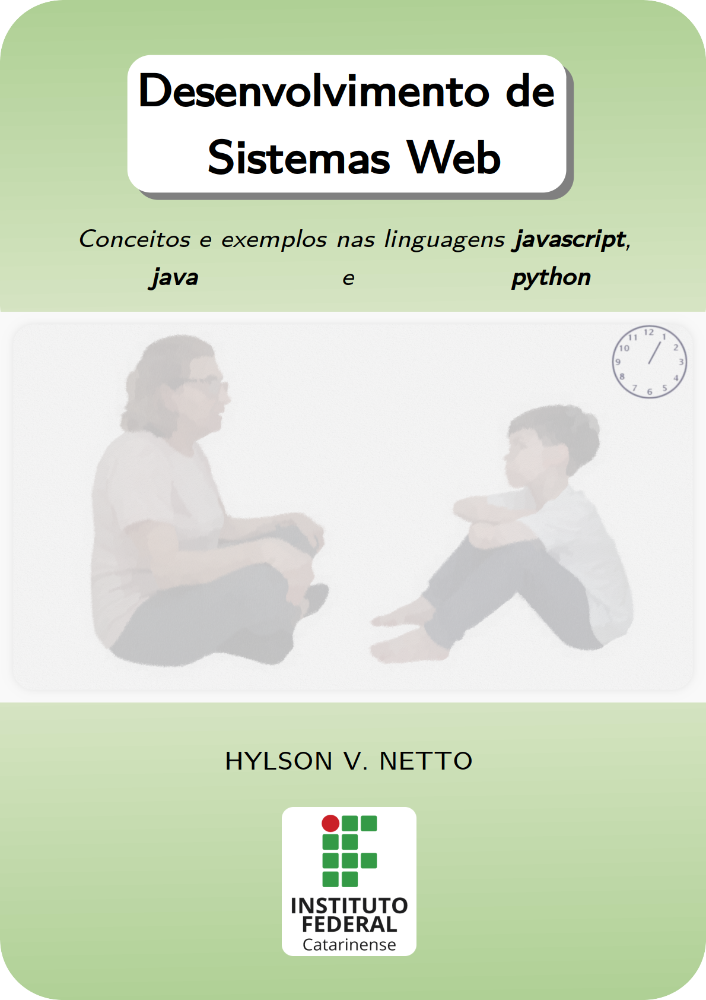
INSTITUTO FEDERAL CATARINENSE
REITORA
Sônia Regina de Souza Fernandes
PRÓ-REITORA DE ENSINO
Josefa Surek de Souza
PRÓ-REITOR DE EXTENSÃO
Fernando José Taques
PRÓ-REITORA DE PESQUISA, PÓS-GRADUAÇÃO E INOVAÇÃO
Fátima Peres Zago de Oliveira
PRÓ-REITORA DE DESENVOLVIMENTO INSTITUCIONAL
Jamile Delagnelo Fagundes da Silva
PRÓ-REITOR DE ADMINISTRAÇÃO
Stefano Moraes Demarco
EDITORA IFC
COORDENADORA
Leila de Sena Cavalcante
CONSELHO EDITORIAL
Claudecir Alberto Schenkel
Fernando José Garbuio
Josefa Surek de Souza
EDITORA DO INSTITUTO FEDERAL CATARINENSE
Rua das Missões, 100 - Ponta Aguda
CEP: 89.051-000 – Blumenau/SC
www.editora.ifc.edu.br
Editora filiada a:

| Direção Editorial | Hylson Vescovi Netto | |
| Capa e Projeto Gráfico | Hylson Vescovi Netto | |
| Editoração Eletrônica | Hylson Vescovi Netto | |
| Revisão | Leandro Augusto Loss | |
Copyright © Hylson Vescovi Netto.
Todos os direitos reservados. Proibida a venda.
As informações contidas no livro são de inteira responsabilidade do autor.
Dados Internacionais de Catalogação na Publicação (CIP)
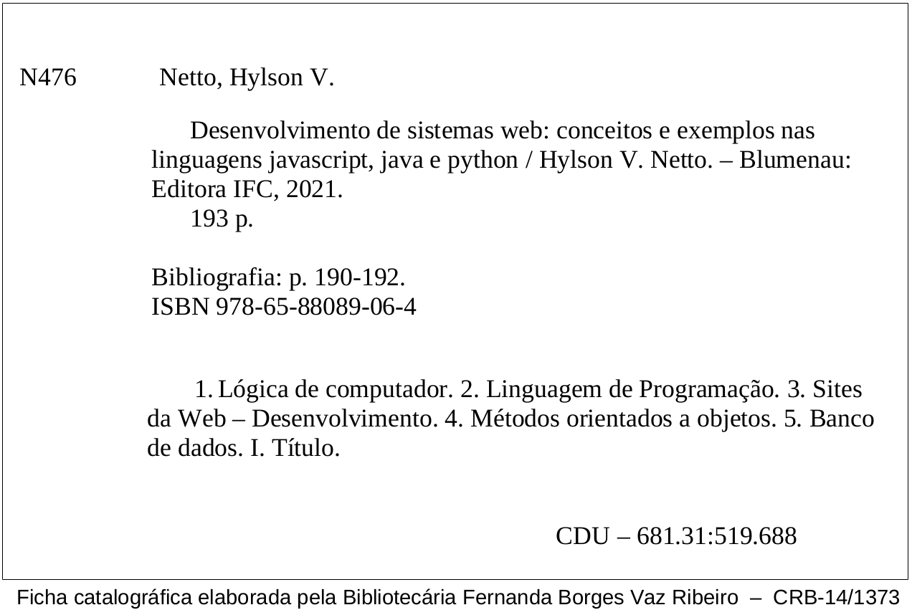
Este livro trata sobre lógica de programação, assunto cujo desenvolvimento provê um raciocínio que pode ser útil em diversos contextos. No mundo prático do trabalho, existem locais nos quais as ações do trabalhador precisam ser realizadas com maior detalhamento. Nesses casos, é preciso criar um procedimento operacional padronizado (POP), um documento que descreve em passos como realizar tarefas. Considerando o contexto de pandemia no qual se encontra o mundo no momento da escrita deste livro, considere como exemplo a atividade de limpeza, desinfeção e sanitização dos ambientes escolares, a fim de preparar tais ambientes para o retorno gradual das aulas, no momento em que isso for possível. Esse trabalho requer uma série de ações que devem ser realizadas com atenção. No IFC, por exemplo, foram criadas instruções detalhadas sobre como devem ser as instalações, a frequência das ações a serem realizadas, os procedimentos a serem realizados e quem são os responsáveis pela realização dessas ações (Figura 1.1). Nesse POP as instruções se encontram de forma textual, organizadas sob a forma de itens a serem observados e cumpridos.
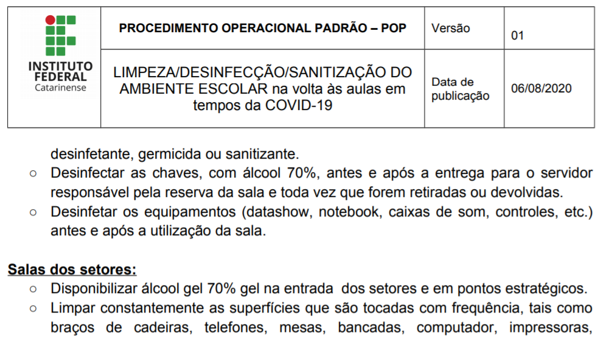
Outro exemplo é a descrição de procedimentos visando garantir a higiene em ambientes de manipulação de alimentos. Essas instruções são tão precisas que há cursos específicos sobre como esses passos devem ser realizados (por exemplo: escolavirtual.gov.br/curso/287). As instrução são detalhadas, informando o local, o que fazer, qual a frequência da ação, como fazer o procedimento, quem é o responsável pela ação e outras observações (Figura 1.2).
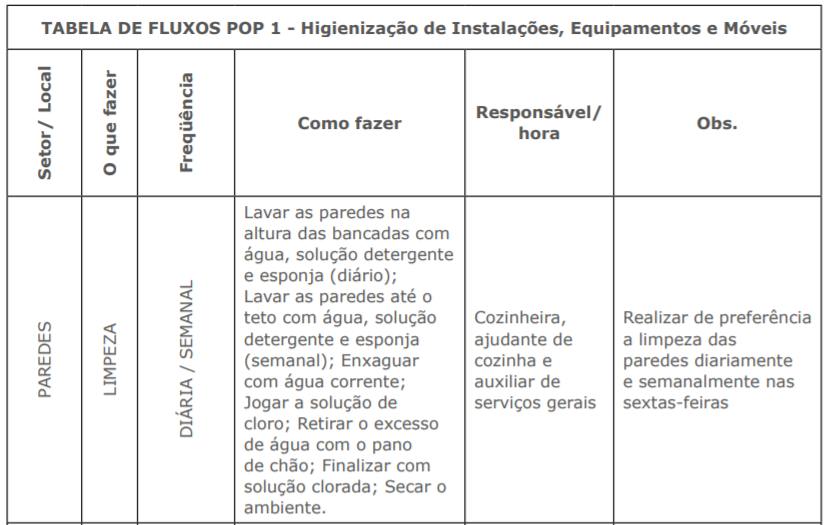
Pode-se, assim, tentar expressar a relação entre a lógica de programação e a definição de instruções para se realizar um trabalho por meio da seguinte hipótese: a definição de uma sequência de passos necessários para cumprir uma tarefa contém em si raciocínios e estratégias similares àqueles necessários à construção de um programa. O que essa hipótese afirma é que aprender lógica de programação ajuda a organizar o pensamento, analisar problemas e propor soluções em termos de sequência de passos para se alcançar um objetivo. Para verificar se essa hipótese é verdadeira, cabe ao leitor seguir os conceitos e exemplos descritos neste livro, realizando também a experimentação prática proposta por meio dos programas apresentados. Ao fim do consumo deste material, será possível verificar se surgiram melhoramentos e novos pensamentos nas suas habilidades de sistematização e organização de passos e etapas necessários para a realização de tarefas.
Quando houver dúvida sobre a utilidade em aprender lógica de programação, ou como tal assunto será útil para os anseios profissionais, dê a si próprio o benefício da dúvida sobre quais são as possibilidades de aplicação da lógica de programação nas futuras atuações profissionais que porventura você pretenda. Não busque invalidar o conhecimento contido neste material por julgar que talvez essas informações não sejam necessárias para você. Às vezes gastamos mais tempo pensando em motivos para não fazer ou aprender algo, quando tal tempo e esforço seria muito mais produtivo alimentando a imaginação em possibilidades de ação e realização:
[..] o interessante a respeito desse padrão de comportamento é que, se o que eu demonstrei é uma coisa que você gostaria de ser capaz de fazer, então você bem que poderia gastar seu tempo aprendendo a fazê-lo. Há muitas e muitas coisas que nós não conseguimos fazer. Se você puder programar-se para procurar as coisas que serão úteis para você e para aprendê-las, ao invés de tentar descobrir onde é que fracassa aquilo que lhes estamos apresentando, garanto-lhes que logo irão perceber onde é que as coisas fracassam. Se você usar de modo congruente essa informação, encontrará montes de lugares onde ela não adianta nada. E quando não der certo, sugiro-lhes que experimentem alguma coisa diferente. (BANDLER; GRINDER, 1982, p.110).
Aprender a programar, assim como aprender outros assuntos, é uma tarefa que fica mais fácil quando há interesse do aprendiz em desenvolver tal habilidade. Há muitas possibilidades de aplicar a programação no cotidiano de várias profissões, ou mesmo para resolver muitos tipos de problemas. Portanto, tente alinhar os seus desejos e gostos com os inúmeros problemas que podem ser resolvidos com apoio da programação. Este documento traz, além de referências à programação, situações nas quais a programação pode ajudar a resolver problemas práticos. Este livro busca a redação dos textos segundo a norma culta, a fim de oportunizar ao estudante o contato com bons textos em português, por meio da leitura, enquanto estuda programação.
Sugere-se ao aprendiz que sempre observe o programa citado no texto e digite-o em seu computador, a fim de compreender cada linha do programa, enquanto a mesma está sendo transferida do “papel” para o computador. A impressão deste livro em meio físico é permitida e recomendada, e pode fornecer a experiência multimídia, quando se realiza a leitura em papel e a prática no computador. Um livro tem potencial enorme de aprendizagem com profundidade (youtu.be/gbOM8n9omUE?t=337). Entretanto, caso seja de interesse testar primeiramente se o programa que você vai estudar realmente funciona, o código do programa pode ser obtido diretamente da internet para o seu computador, a fim de testar seu funcionamento. Todo código-fonte citado neste material advém de um programa armazenado no github. Cada endereço é fornecido após a listagem do respectivo código-fonte. Algumas seções estão acompanhadas de vídeos explicativos sobre o conteúdo da seção. Os endereços desses vídeos se localizam no começo da respectiva seção que possui o vídeo, e está sinalizado com o logotipo do site youtube. Neste livro foram também consideradas algumas premissas:
Quatro personagens eventualmente aparecem nesse documento em interações nos conteúdos apresentados. O objetivo desses diálogos é passar, por meio dessas figuras fictícias, algumas dinâmicas que advém da experiência vivenciada em situações reais. Os personagens são Túlio, Pedro, Gabriela e Agnes. Quatro amigos que estudam informática e possuem características bem diferentes. Ao longo do texto será possível conhecê-los melhor. Sigamos suas aventuras!
Agradeço ao discente Leonardo Habitzreuter por ter me confrontado com a realidade da construção de sistemas usando a arquitetura front-end e back-end (em vez da arquitetura integrada), o que provocou uma mudança positiva na minha prática docente para adequar tal fato. Agradeço também aos pareceristas contactados pela editora do IFC, que forneceram valiosas sugestões para o aprimoramento desta obra. Várias sugestões foram realizadas nesta obra, enquanto outras começaram a ser executadas na segunda edição deste livro, ainda por vir.
Este livro contém nove (9) capítulos que estão organizados em uma sequência, com exceção do último capítulo que foi criado para fins de consulta sob demanda (Figura 1.3). O primeiro assunto a ser abordado é a manipulação de repositórios (Capítulo 2), pois o armazenamento de código feito em repositórios públicos cria um “portfólio” de programação. Esse portfólio pode ser útil tanto para apreciação em oportunidades de trabalho tanto para o professor que deseja avaliar os códigos produzidos pelo aluno. A seguir, são introduzidos elementos de apresentação (Capítulo 3), pois todo sistema deve possui uma boa aparência. Sendo assim, é importante conhecer os elementos mais básicos dos quais uma tela de sistema web é feita. Na sequência, encontra-se o conteúdo sobre orientação ao objetos (Capítulo 4), pois essa maneira de desenvolver programas possui grandes vantagens como reutilização e encapsulamento, dentre outras. Uma breve abordagem sobre persistência de dados (Capítulo 5) menciona formas de armazenar os dados, a fim de que eles não se percam e permaneçam gravados.
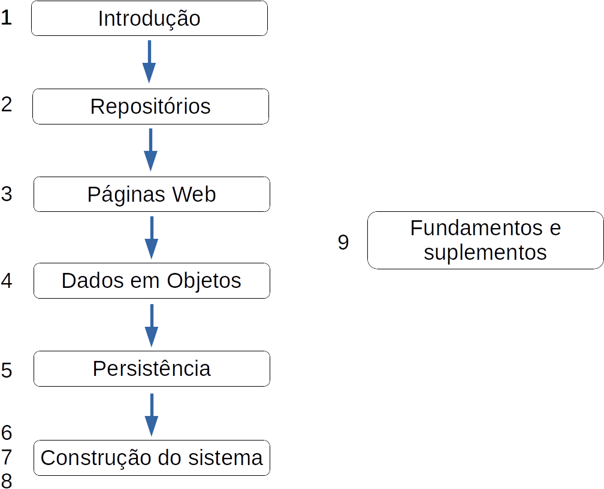
Após conhecer os elementos básicos de um sistema, inicia-se a construção de um sistema web, utilizando as linguagens python e javascript. Primeiramente, constrói-se uma aplicação monolítica que abriga todos os elementos do sistema (Capítulo 6), para conhecer as potencialidades do python na construção de um sistema web. Essa aplicação apenas lista informações que são previamente cadastradas no sistema como dados de exemplo. A seguir, a aplicação é separada em duas partes: front-end e back-end (Seção 6.2). Ambas as partes continuam desenvolvidas em python, trocando informações por meio textual em formato json. Inicia-se, então, o desenvolvimento da aplicação com o back-end sendo codificado em python e o front-end escrito em javascript (Capítulo 7). O uso de javascript é bastante comum para a construção de front-ends, enquanto o python pode ser utilizado com sucesso na construção de um back-end. O sistema é incrementado gradualmente com funcionalidades que permitem realizar inclusão de dados (Seção 7.2) e exclusão de dados (Seção 7.3). Outra expansão do sistema se refere a criar novas classes para armazenar mais informações, crescendo assim o tamanho do sistema (Capítulo 8). São adicionadas classes por meio de agregação e composição, além de uma classe que possui relacionamento múltiplo com outras classes (N x N). O sistema é concluído com um formulário de inclusão de dados que traz informações de classes relacionadas, para que o dado composto possa ser gravado com dados dessas outras classes (Seção 8.2).
O livro traz também informações básicas sobre o uso de dicionários na linguagem python (Capítulo 9), além de informações adicionais (suplementos) sobre operações que envolvem o uso dessa linguagem. O capítulo de orientação a objetos, chamado “Dados em objetos”, apresenta diversos exemplos de conceitos utilizando as linguagens java e python: classes introdutórias, agregação e uso de construtores (Tabela 1.1). Alguns conceitos permanecem apenas implementados na linguagem python (generalização) ou java (polimorfismo). Edições futuras deste livro pretendem completar as lacunas que existem no presente material, em relação à implementação dos conceitos em ambas as linguagens.
| Assunto de orientação a objetos | java | python |
| classes introdutórias | sim | sim |
| agregação | sim | sim |
| generalização | não | sim |
| polimorfismo | sim | não |
| construtores | sim | sim |
A aplicação desenvolvida a partir do Capítulo 6 deste livro obedece uma organização em camadas (Figura 1.4). Na camada superior (Apresentação) encontram-se elementos que são expostos para exibição e interação com o usuário final do sistema (componentes do front-end): páginas HTML, elementos visuais de estilo (Folhas de estilo - Cascade Style Sheet (CSS)) e programas em javascript. Na camada intermediária se encontra a aplicação, que contém toda a inteligência do sistema: ações, regras de negócio e modelos dos dados. Neste livro é utilizada a linguagem python para a construção da aplicação (back-end). Na última camada, a persistência de dados é realizada com uso do banco de dados SQLite.
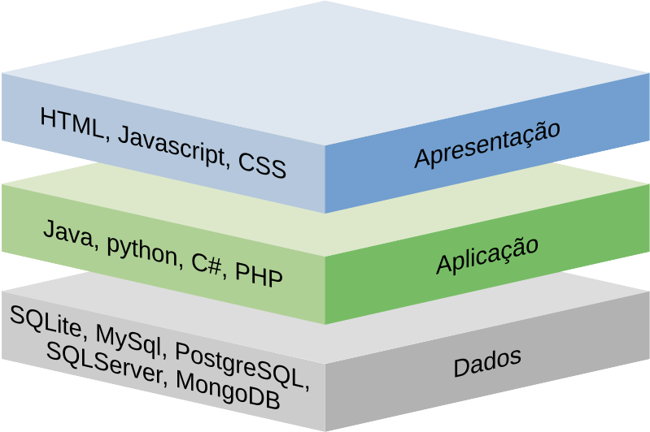
É possível representar a arquitetura do sistema desenvolvido neste livro sob outra perspectiva (Figura 1.5). O cliente utiliza um navegador (front-end), que renderiza componentes de interface hospedados no servidor web. A aplicação (back-end) é executada em um servidor web, e contém componentes de negócio e de dados que se comunicam com um servidor de banco de dados, no qual a persistência dos dados é efetivada.
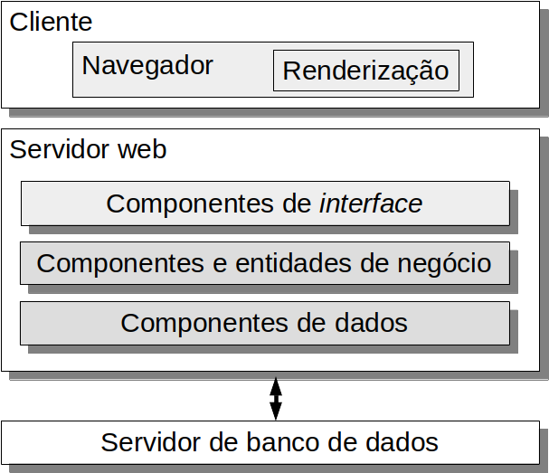
Este livro retrata o conteúdo apresentado ao longo de um ano para uma turma de terceiro ano de um curso técnico em informática integrado ao ensino médio. Porém, o percurso descrito no livro pode ser utilizado também por quem possui conhecimentos de lógica de programação e deseja aprimorar sua habilidade de criação de sistemas de cadastro web para, por exemplo, estar melhor preparado em processos seletivos de trabalho. Nesse caso, basta seguir a construção de sistema proposta a partir do Capítulo 6. Edições futuras deste livro pretendem colocar lado a lado os fundamentos de java e os fundamentos da linguagem python, para assim prover uma aprendizagem por comparação. Essas duas linguagens foram escolhidas para utilização neste livro pois são linguagens praticadas nos cursos de nível médio e superior do IFC Campus Blumenau. São linguagens que foram escolhidas, portanto, também pela instituição de ensino, na elaboração de seus cursos. Além disso, a linguagem java está presente em sistemas atuais e legados, desenvolvidos globalmente e em empresas na região de Blumenau. Já a linguagem python possui grande potencial de realização de atividades com uma quantidade modesta de linhas de código, possuindo também uma curva de aprendizagem que fornece resultados rapidamente.
Este livro está disponível no site da editora do IFC: editora.ifc.edu.br. Ele foi escrito com a ferramenta LATE X e está também disponível no formato HTML de forma online em hylson.com/programar. Se você encontrar erros neste material ou quiser fornecer comentários e sugestões, envie email para hylson.vescovi@ifc.edu.br. Sua mensagem será apreciada e poderá contribuir para futuras edições deste livro.
Como início dos trabalhos, nossos amigos Túlio, Pedro, Gabriela e Agnes decidiram utilizar uma ferramenta para gerenciar seus programas. Não foi mais possível aceitar aquela situação de ficar enviando códigos por email, salvando pastas inteiras em pen-drives. Agnes lembra que muitas vezes ela salvava a mesma pasta várias vezes no pen-drive, apenas inserindo um número de versão (por exemplo: cadpessoa1, cadpessoa2, ...). Essa situação tinha que acabar. Iniciaram os amigos então o estudo de uma ferramenta de versão denominada git (https://git-scm.com/). Com essa ferramenta eles poderiam ter o seu código disponível sempre (Supondo que haja internet para a atualização dos programas), em qualquer lugar.
Agnes iniciou os estudos dizendo que achou um tutorial na internet no qual os passos para utilizar um repositório estavam dispostos e explicados (http://rogerdudler.github.io/git-guide/). Pedro sugeriu, porém, ler mais um pouco sobre o git antes de sair executando comandos com base nas poucas explicações fornecidas. Após leituras e alguma conversa entre os colegas, Agnes resolve formalizar o processo de um “uso feliz” de repositórios usando algumas palavras-chave:
cadastrar ! criar ! clonar ! modificar ! atualizar
Como primeira ação, eles verificaram que é necessário cadastrar uma conta no github. Túlio rapidamente acessou o site http://www.github.com e realizou o cadastro das informações necessárias. O nome de usuário utilizado pelos amigos foi criado com bastante critério, a fim de facilitar sua utilização (Tabela 2.1). O nome completo de Pedro não é um nome incomum, logo ele adicionou um número significativo para ele, a fim de diferenciar seu logins dos demais já existentes (já havia um psoliveira cadastrado).
| Nome | Usuário |
| Túlio Stein Junior | tsjunior |
| Pedro Silva de Oliveira | psoliveira901 |
| Gabriela Hoffman Fardin | ghfardin |
| Agnes Pirolli Santini | apsantini |
Após cadastrar as contas no github, todos partiram para criar o primeiro repositório. Gabriela estava interessada em armazenar programas de uma disciplina chamada “Programação 2”, logo criou um repositório chamado “programacao2”. Essas tarefas de cadastro e criação de repositório foram executadas no navegador web, no endereço github.com. A seguir, os estudantes abriram os terminais de comando para iniciar a operação de repositórios em modo texto, pois a operação via terminal é simples para a maioria dos comandos comumente utilizados. Túlio foi o primeiro a clonar o repositório vazio que acabara de criar na internet, executando este comando no terminal:
$ git clone https://github.com/tsjunior/pgm2.git
Você consegue descobrir o nome do repositório que Túlio clonou, certo? (O repositório chama-se pgm2) Agnes achou por bem clonar o repositório na página do github, em um botão no canto superior direito que permite efetuar o download do repositório em formato compactado (zip). Túlio advertiu-a, mencionando que repositórios baixados via arquivo ZIP não mantém controle do histórico de alterações! Gabriela clonou o repositório via linha de comando da seguinte forma:
$ git clone https://github.com/ghfardin/programacao2.git
Após executar o comando de clonagem, Túlio observou que foi criada uma pasta chamada “pgm2” no diretório atual. Sendo assim, ele acessou o diretório (ele utilizou o comando $ cd pgm2) para iniciar a construção de seus programas, ou seja, modificar o conteúdo do repositório. Ele, assim como os demais, criou arquivos com programas, pastas, arquivos pdf, etc. Túlio foi o primeiro que terminou de fazer os programas do repositório, e assim seguiu para atualizar o repositório remoto. Afinal, era preciso salvar os programas construídos com tanto afinco naquele momento. Não estava bem claro para ele como seria realizada essa atualização, sendo útil então a ajuda de Pedro, que iniciou um diálogo com Túlio:
|
— Túlio, grave em sua mente três palavras que podem te ajudar a lembrar a sequência de comandos para atualizar o repositório remoto: add, commit e push. — O que? Não entendi nada! Explica isso direito. — Ok, então você tentar imaginar essa seguinte sequência: adicionar, confirmar e enviar. — Certo, melhorou um pouco. Mas você pode detalhar isso pra mim? |
Após adicionar os arquivos a serem alterados na lista de alterações, é preciso confirmar as alterações, informando uma mensagem que descreve, em termos gerais, o que significam as alterações que foram realizadas. Iniciou-se assim outro diálogo interessante:
|
— Pedro, você está querendo dizer que eu preciso ficar pensando sobre o que eu fiz no repositório para poder enviá-lo pra internet? Tá de brincadeira comigo né? — Ô Túlio, essa mensagem de confirmação é útil para demarcar no github alguns pontos de avanço do código. Em um primeiro momento parece estranho, mas a gente se acostuma a refletir sobre o que tem feito no código e depois de um tempo a gente se torna hábil para descrever em poucas palavras o que fez nas últimas horas de programação. — Ok, ok, vou acreditar nessa sua teoria. — Pratique e depois me diga o que achou. |
|
— Então, eu posso colocar uma mensagem assim: “hoje o meu dia foi muito legal”? — (Pedro) Olha, até pode, mas isso não diz nada sobre o seu código. Seria melhor você colocar algo desse tipo: “foram feitas atualizações para melhorar o desempenho”, ou então: “realizada correção de um erro ao dividir números inteiros”. — Ah, que chato isso. Não posso colocar sentimentos nessas mensagens? — Pode sim, que tal: “Hoje consertei o maior bug que encontrei na vida! Demorei cerca de uma hora, mas venci.” — (Túlio) Alguém pode me dizer por favor qual é o comando que faz essa tal de confirmação com mensagem??? |
$ git commit -m ’Consegui inserir uma folha de estilo na página HTML, mesmo com muito barulho na sala’
Inesperadamente, ocorre um erro que deixa todos perplexos. Como poderia toda a teoria discutida e compreendida ter falhado naquele momento? Agnes então entra em cena:
|
— Pessoal, eu li em algum manual que é preciso configurar o git, informando o nome e o email do usuário que está operando o repositório. — (Gabriela) Hã? E como eu poderia fazer isso?? — Por acaso anotei aqui no caderno, pois achei mesmo que isso poderia servir. Os comandos são estes: $ git config user.name “Agnes” e $ git config user.email “apsantini@gmail.com”. — (Túlio) Certo, mas no meu caso devo trocar o nome do usuário e o email, certo? — Sim, isso mesmo. Cada um coloca o seu nome de usuário e email nos comandos. — (Túlio) Peraí: eu preciso executar esse comando em CADA REPOSITÓRIO que eu clonar? Assim não vai rolar. — (Pedro) Olha só, em máquinas compartilhadas como estas aqui do laboratório você configura o usuário executando esse comando “dentro” do seu repositório. Na SUA CASA, onde só você mexe no git, você pode usar uma palavra especial para informar que TODOS os repositórios daquela máquina vão utilizar o nome de usuário e o email que você informa. — (Túlio) Opa, gostei disso aí. Como é o comando? — Basta acrescentar o termo global, com dois tracinhos antes. — (Túlio) Tá. Como? — Vou mostrar um exemplo, lá em casa eu fiz assim: $ git config --global user.name “Pedro 901”. A seguir, usei este: $ git config --global user.email “psoliveira901@hotmail.com“. — Que número é esse? — É um número que tem um significado pra mim, eu uso pra diferenciar meu nome rsrs. Tem muito Pedro por aí. |
Após todos confirmarem as alterações feitas em seus respectivos repositórios, partiram para o terceiro passo: enviar as alterações adicionadas e confirmadas para o repositório remoto. Túlio rapidamente executa o comando: $ git push e inicia o diálogo:
|
— Opa, atualizei meu repositório! — (Pedro) Legal! Verifica lá no site do github se as alterações foram enviadas. |
O segundo passo na manipulação de repositórios é a atualização de seu repositório local a partir do repositório remoto. Essa necessidade pode ocorrer, por exemplo, na sequência de eventos descrita a seguir:
O cenário descrito pode ser resolvido apagando-se o repositório existente no computador de sua casa e efetuando-se a nova clonagem. Existe, porém, uma atitude mais apropriada para esse caso: pode-se verificar a situação de atualização do repositório local e, a partir da constatação de que você possui uma versão desatualizada, realizar a atualização. Antes de verificar o estado do repositório local, porém, é preciso atualizar o repositório local com informações do repositório remoto. Acompanhe o diálogo a seguir:
|
— (telefone chamando) — (Pedro) Alô. — (Agnes) Oi Pedro! Na semana passada eu peguei aquele código que fizemos na última aula de laboratório. Mas olha, quando fui clonar, o git informou que já havia um repositório na máquina com esse nome. Daí apaguei o repositório e clonei novamente. Complicado hein?! Vou fazer isso de novo agora e te liguei só pra avisar que vou começar a mexer no trabalho de programação. — Bom dia Agnes! — Bom dia. — Olha só, fica tranquila. Não precisa apagar e clonar o repositório de novo. Tem alguns comandos que podem ser usados quando a gente já possui o repositório localmente e só quer atualizá-lo. Vou te passar agora, anota aí tá? — Opa, me passa aí que eu vou fazer é já! — Beleza. Primeiramente precisa trazer as metainformações do repositório para o computador local. — Trazer as meta quem? — Ahah são informações de controle do git sobre o seu repositório. Você pode fazer isso com esse comando: $ git remote update. Esse é o primeiro comando que você precisa executar quando chega em um computador que já tem o seu repositório e não tem certeza se ele está atualizado. — Beleza. Executei aqui mas deu um erro. E agora? — Agnes, você entrou no repositório pra poder dar esse comando? Quando a gente abre o terminal, geralmente ele inicia na pasta raiz e a gente tem que entrar na pasta, com o comando $ cd. — Ah foi mal! Não tinha entrado. Deixa fazer aqui... pronto, agora deu certo! Acho que os metadados vieram, pois ele escreveu um monte de coisas na tela depois que eu executei o $ git remote update. — Ok, é isso aí. Se ele mostrou algumas coisas na tela é possível que seu repositório local esteja desatualizado mesmo. — Sim, está! Eu fiz um monte de códigos lá no laboratório. — Tá certo. Vamos conferir isso então agora, vamos ver como está a situação do seu repositório. Segue o comando que mostra isso: $ git status — Opa, legal! Tá mostrando aqui alguma coisa de que o meu repositório está “atrás” do repositório remoto. Algo assim. — Certo. Então seu repositório local está “desatualizado” em relação ao repositório remoto, como esperávamos, certo? — Certo! E daí? — Agora você pede para o git trazer as alterações do repositório remoto e atualizar o seu repositório local. — Pode ser com comando de voz? — Hehe não, segue aqui o comando: $ git pull — Só isso? Hum... entendi, é o contrário de push, que usamos naquele outro comando que envia os dados. — É isso aí. Manda ver. — Executei. Deixa ver aqui... beleza! Tá tudo aqui. Obrigada Pedro! — De nada! Nos vemos na próxima aula. Abraço e quando terminar lembra de fazer add, commit e push. — Valeu! |
Tarefa sugerida: execute as ações a seguir para experimentar a situação de sincronizar seu repositório local.
________________________________________________________________________________________________________________________________________________________
É possível acontecer uma situação na qual haja informações atualizadas mas diferentes nos repositórios local e remoto. Isso pode ocorrer, por exemplo, ao modificar um repositório desatualizado localmente. Nesse caso, para não perder as alterações, deve-se fazer uma operação de junção (mesclar = fundir = merge). Essa necessidade pode ocorrer em um cenário descrito a seguir:
Alguns conflitos podem ser resolvidos automaticamente e outros não. Acompanhe o diálogo a seguir para descobrir como agir em situações de conflito:
|
— Boa tarde Túlio! — Boa tarde Gabriela. O Pedro me falou que você já está sabendo como resolver problemas usando o git. — Sim, consegui estudar essa parte e já estou praticando. Qual é sua dúvida? — Eu tenho um problema! Continuei desenvolvendo o trabalho de programação mas esqueci de atualizar o repositório local. Agora não consigo fazer o push, dá um erro. O git rejeita minhas alterações! — Certo. Bom, vamos ver se a gente consegue resolver da forma simples. Já está com seu notebook ligado né? Então vamos tentar. Já atualizou o repositório local? — Eu alterei os arquivos e melhorei o trabalho de programação. — Sim, mas quero saber se você já deu aquele comando para o git saber como está o seu repositório local em relação ao remoto. — Ah sei, o comando update. Ainda não fiz. Vou fazer agora então: $ git remote update). Pronto. — Bem, já sabemos que você tem conflitos porque não conseguiu fazer o push, certo? — Isso. — Então, vamos tentar fazer a resolução automática de conflito. Você vai usar o seguinte comando: $ git merge — Pronto, executei. Eita, abriu um editor de texto aqui! — Ele pede pra você informar uma mensagem, parecida com a mensagem do commit. Coloca algo assim: “resolvendo conflito do trabalho de programação”. — Pronto. Salvei e ele saiu do editor de textos. E agora? — Bem, vamos verificar como ficou o repositório local depois da mesclagem. Use aquele comando do status. — Certo: $ git status. Aparentemente tudo certo então. Obrigado!! — Tudo certo? Legal! Então foi feita uma resolução automática de conflito. Agora é só fazer o push e pronto. — Beleza, vou fazer já: $ git push. Ok! Obrigado Gabriela! — De nada. |
Tarefa sugerida: experimente uma situação de fusão com alterações sem conflito (i.e., que pode ser resolvida de maneira automática). Neste caso, serão alteradas linhas diferentes de um mesmo arquivo. Execute a seguinte sequência de ações:
________________________________________________________________________________________________________________________________________________________
Quando as alterações em um mesmo arquivo não podem ser resolvidas automaticamente, é preciso intervir para fazer a mesclagem. É o caso, por exemplo, de uma mesma linha de um arquivo ser alterada de duas formas diferentes (de uma forma no repositório remoto e de outra forma no repositório local). Nesse caso, após a execução do comando de fusão, o arquivo local é alterado e as duas diferentes versões da linha são exibidas no mesmo arquivo, que deve ser editado para definir quais alterações devem prevalecer. As alterações são sinalizadas com caracteres <<<<<<, ====== e >>>>>>. No arquivo local, o conteúdo discrepante que se encontra no repositório local será delimitado pelos caracteres <<<<<< e ======. O conteúdo discrepante existente no repositório remoto será localizado entre os caracteres ====== e >>>>>>. É preciso apagar os caracteres delimitadores, eliminar o conteúdo duplicado e decidir qual conteúdo deve prevalecer, dentre as diferenças. Pode-se optar por um dos conteúdos discrepantes, ou criar um terceiro conteúdo, resultante da fusão dos conteúdos anteriores.
Um de nossos amigos, o Pedro, vivenciou essa situação emocionante de não conseguir atualizar seu repositório remoto devido a conflitos cuja resolução não era automática. Veja a conversa dele com Agnes:
|
— (Pedro) Oi Agnes! Que bom te encontrar aqui pelo laboratório. — Diga aí Pedrão. — Pois então, estou trabalhando há umas duas horas aqui, mas quando cheguei, peguei a mesma máquina que costumo usar, e como meu repositório já estava aqui, continuei a desenvolver os programas desde a última aula. Mas esqueci que último sábado à tarde resolvi programar um pouco antes de sair para um aniversário à noite. Daí agora estou aqui tentando enviar tudo para o github, mas não vai, não vai. — Calma aí! Você usou add, commit e push? — Sim. Mas ele não faz o push, ele mostra umas coisas escritas, incluindo um termo “rejected”. — Ah sim. Deve haver conflitos que precisam ser resolvidos. Depois dessa mensagem você tentou novamente fazer a junção dos códigos, com o merge? — Não. É mesmo!! Vou tentar, peraí... ah! Olha aí, não vai! — Certo. Então o git não conseguiu resolver seu problema automaticamente. Você vai ter que editar seus arquivos e resolver as diferenças manualmente. — Tá. Eu mexi ... caramba não sei em quais arquivos eu mexi! Foram tantos. — Certo. Mas veja então o resultado do comando $ git status. Ele vai mostrar o caso em que ambos os arquivos foram modificados (versão local e versão remota). — Verdade! Tá listando, olha. — Isso aí. Outro comando interessante é este: $ git diff. Ele mostra os conteúdos diferentes nos arquivos modificados. — Verdade. Nossa, mexi em tudo isso! Muita coisa! — Agora inclui esse parâmetro no comando, pra mostrar só os nomes dos arquivos: $ git diff --names-only. — Opa! Show de bola. Deixa abrir um arquivo destes pra ver... eita! Tem uns símbolos diferentes. — Sim. Após os sinais de menor (<<<<<) está o texto que existe no seu computador local. Depois vem um monte de sinais de igual (=========) e depois o texto que está no servidor remoto, terminando com sinais de maior (>>>>>). — Certo. Então vou ver qual dessas linhas é a certa... tá, escolhi. Daí apago esses caracteres e deixo só o texto que quero, certo? — Isso aí. — Salvo o arquivo... acertei o texto. E agora? — add, commit e push — Beleza! Deu certo. Obrigado! |
Tarefa sugerida: será des crita uma situação de fusão com alterações conflitantes, com alteração de informações da mesma linha (i.e., do mesmo número de linha) nos arquivos local e remoto. Para realizar a mesclagem com conflitos, execute a seguinte sequência de ações:
________________________________________________________________________________________________________________________________________________________
Quando se remove um arquivo de um repositório local, é preciso informar ao git que esse arquivo foi removido. Assim como existe a operação de adicionar arquivos no repositório ($ git add arquivo), existe também um comando para excluir um arquivo do repositório:
$ git rm nome-do-arquivo
Após remover o arquivo, é necessário confirmar essa ação junto ao repositório:
$ git commit -m ’removendo arquivo’
Por fim, deve-se enviar as alterações para o repositório:
$ git push
Caso seja necessário remover uma pasta, pode-se utilizar o parâmetro -r:
$ git rm -r nome-da-pasta
Nesse caso, será removida a pasta e todos os arquivos e subpastas contidas na pasta.
Existe um comando do git para que se possa informar ao git sobre mudanças nos nomes de arquivos e pastas. O comando $ git mv velho novo informa ao git que o arquivo chamado velho passou a se chamar novo. Esse comando pode ser utilizado também para alterar o nome de pastas. A alteração de nome pode ser feita diretamente com o comando mv do git, em vez de renomear o arquivo ou pasta via sistema operacional ou via gerenciador de arquivos.
Quando usar o git em seu computador pessoal no sistema operacional Linux, você pode solicitar que o login e a senha sejam armazenados, para que não seja necessário informar essas informações a cada atualização do repositório remoto. O comando que pode realizar essa ação é este:
git config --global credential.helper store
É possível permitir que outras pessoas tenham acesso de escrita a um repositório, o que pode ser útil em pequenos projetos desenvolvidos em grupo. No site do github, para compartilhar um repositório deve-se acessar o menu de configurações de um repositório, acessar o submenu “Colaboradores” e então adicionar uma informação do colaborador (login do github ou email) (Figura 2.1).
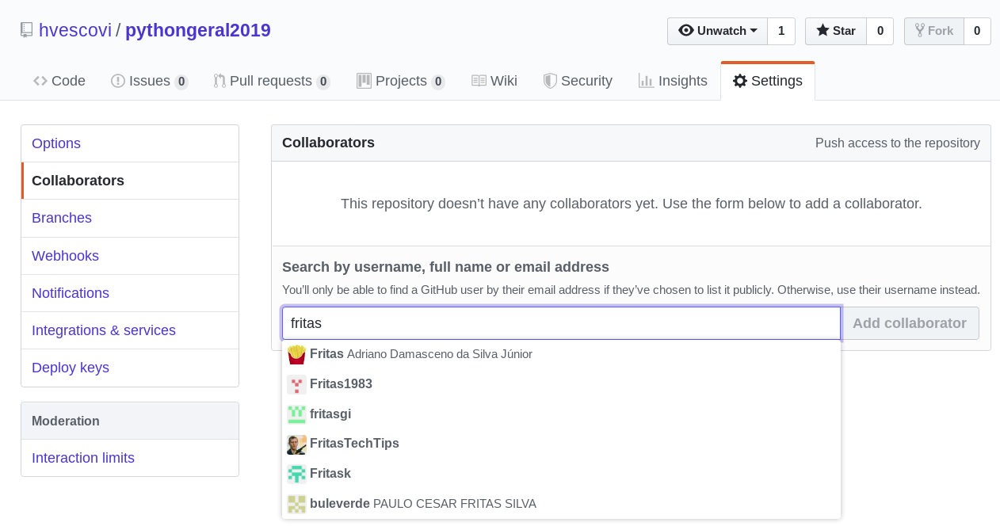
Este capítulo apresentou o uso da ferramenta git para criar e sincronizar repositórios remotos hospedados no site github.com. Foi também abordado como solucionar conflitos entre repositórios (local e remoto), excluir e renomear arquivos. Por fim, tratou-se do compartilhamento de repositórios, para permitir de forma básica que mais de um usuário possa atuar sobre um mesmo repositório.
O desenvolvimento de sistemas pode ser modularizado de forma geral em duas partes: a interface com o usuário e o sistema de processamento e armazenamento de dados. Ao primeiro denominamos front-end, enquanto o segundo é conhecido como back-end. As tecnologias envolvidas no desenvolvimento do frontend incluem HTML, javascript e CSS, e serão abordadas neste capítulo.
Os amigos Tulio, Pedro, Gabriela e Agnes iniciaram seus estudos nos elementos básicos de um front-end para a web: os comandos da HTML (HyperText Markup Language). Toda página HTML é delimitada pelas tags <html> e </html> (Código 3.1, linhas 2 e 14). A página é divida em duas partes principais: o cabeçalho da página, delimitada pelas tags <head> e </head> (linhas 4 e 6), e o corpo da página, delimitada pelas tags <body> e </body> (linhas 8 e 11). No cabeçalho da página considerada, existe a tag title, que define a frase a ser exibida na barra superior do navegador web (é o “título” da página). A tag h1 (linha 9) exibe uma mensagem em formato grande, enquanto a tag p exibe o texto contido na tag em forma de parágrafo (linha 10).
Alguns dos componentes mais comuns que fazem parte de uma página HTML são os links, os estilos de formatação, as imagens e as estruturas de agrupamento conhecidas como div. Esse componentes estão descritos nas próximas seções.
Considere um link para o site do Google. Para criar esse link pode-se utilizar o seguinte código HTML:
<a href=“http://www.google.com”>Google</a>
A tag que especifica links chama-se a e possui o parâmetro href, que especifica o endereço para qual o link aponta. Entre a abertura e o fechamento da tag se encontra o texto que será exibido no link.
As páginas HTML em geral possuem o conteúdo a ser exibido ao usuário. A maneira como as informações serão exibidas é definida pela forma e pode ser especificada em um arquivo de folhas de estilo (Cascade Style Sheet), que possui extensão “.css”. Os principais especificadores de estilos são compostos pelos caracteres # e o ponto (.). O primeiro referencia elementos específicos que possuem identificadores. O segundo referencia grupos de elementos que aplicam uma determinada classe.
Considere o exemplo de um parágrafo que deve ser exibido na cor azul (Código 3.2, linha 12). Uma forma de definir essa formatação é identificar o parágrafo a ser formatado. O parágrafo em questão e então identificado pelo nome primeiro, por meio do parâmetro id. O próximo passo consiste em “ligar” a página a um arquivo de folha de estilo. Essa ação pode ser feita com a tag link (linha 6). Especifica-se, nessa tag, por meio do parâmetro rel, que será feito um vínculo com um arquivo de folha de estilo. O nome do arquivo é fornecido no parâmetro href. Uma formatação pode ser também definida com uso do caracter ponto. Por exemplo, pode-se aplicar uma formatação chamada “amarelo” a um parágrafo (linha 13) e à tag genérica denominada span (linhas 14 e 15), para aplicar a cor amarela ao fundo desses textos. Essa aplicação ocorre com uso do parâmetro class.
O arquivo de estilo é composto pela formatação desejada nos componentes da página HTML (Código 3.3). Define-se que para um elemento identificado por “primeiro” (linha 1) a cor de fundo será igual a azul claro (linha 2). Um estilo chamado “amarelo” é definido como tendo a cor de fundo amarela (linhas 5 a 7).
Fonte: https://github.com/hvescovi/programar2020/blob/master/
02-front-end/01-html-css/03-estilo.css#L1
Imagens são inseridas em páginas HTML por meio da tag img. Uma foto de uma casa pode ser inserida da seguinte maneira:
<img src=“casa.png” />
Uma página pode ser dividida em seções, ou blocos. O componente div pode ser utilizado para construir layouts. Como exemplo, considere seletores de estilo chamados linha e coluna (Código 3.4). Neste material não há interesse em detalhar o conteúdo da configuração de linhas em colunas, mas apenas utilizar esses seletores para construir layouts tabulares.
Com os seletores de linha e coluna pode-se, por exemplo, criar um layout simples com duas colunas (Figura 3.1). Essa configuração pode ser expressa especificando-se que haverá uma div de linha, e em seu interior haverá duas divs de coluna (Código 3.5).
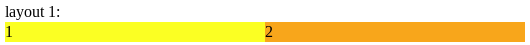
Bootstrap é um conjunto de ferramentas disponibilizado em forma de código livre, para o desenvolvimento de aplicações com uso de HTML, CSS, and Javascript (TEAM, 2020a). A versão atual do bootstrap utilizada durante a escrita deste texto é 4.4.1. O bootstrap faz uso de outras bibliotecas, especificamente: jQuery (biblioteca Javascript) e Popper (biblioteca para facilitar o posicionamento de elementos). Um conjunto de definições denominada Reboot também é utilizado, nas quais diversas configurações visuais são eliminadas e redefinidas pelo bootstrap. Dessa maneira, a exibição de elementos se torna mais similar quando o sistema é acessado por diferentes navegadores web.
Diante dos inúmeros recursos disponíveis pelo bootstrap, forma reunidos aqueles mais relevantes para o desenvolvimento de uma aplicação geral em três tabelas que organizam os elementos principais de conteúdo (Tabelas 3.1), componentes (Tabela 3.2) e alguns utilitários (Tabela 3.3). Cada tabela lista: i) a localização do recurso (caminho), partindo-se da página de documentação do bootstrap; ii) o nome da classe ou tag que implementa o recurso; iii) a descrição do recurso.
Localização | Recurso | Descrição |
Content > Typography > Aligment | text-center | Centralizar elementos (texto, imagens, etc). |
Content > Images > Alignment images | float-left, float-right | Posicionar imagens lado a lado. |
Content > Tables | table, table-striped, table-hover | Tabelas bonitas, zebradas e com destaque ao passar o mouse por cima. |
Content > Figures | <figure>, figure, figure-img, <figcaption>, figure-caption | Imagens acompanhadas por um título descritivo. |
Localização | Recurso | Descrição |
Components > Badges | badge, badge-primary, badge-warning, badge-danger | Pequenas caixas decoradas com textos informativos (por exemplo, contadores). |
Components > Buttons | btn, btn-primary, btn-success, btn-info | Decoração para botões. |
Components > Navs | <nav>, nav, nav-item, nav-link | Decoração para links de navegação. |
Components > Navbar | <nav>, navbar, nav-brand, navbar-toggler, collapse, navbar-collapse, navbar-nav, nav-item, nav-link | Barra de navegação! |
Components > Progress | progress, progress-bar | Barras de progresso. |
Localização | Recurso | Descrição |
Utilities > Borders > Border-radius | rounded, rounded-circle, rounded-pill | Bordas arredondadas e com outras formas aplicáveis em elementos (por exemplo, imagens). |
Utilities > Sizing | vh-100 | Ocupar toda a altura da página. |
Utilities > Spacing | mb-4, pt-2 | Fornecer espaços a elementos (margem e preenchimento - padding). Por exemplo, mb-4 significa margem inferior (bottom) do espaçamento padrão multiplicado por 1.5 |
O boostrap também possui classes quem facilitam a criação de grades. Considere como exemplo uma página que existe uma grade com uma linha, duas colunas na segunda linha e duas colunas na terceira linha (Figura 3.2).
Pode-se observar no código dessa página as tags que definem a utilização do bootstrap (Código 3.6). Inicialmente, são definidas tags para especificar a codificação dos caracteres usados na página (linha 6). A tag seguinte torna possível ao navegador exibir diferentes tamanhos da página conforme o dispositivo utilizado para exibição (linha 7). Na sequência, se inclui a folha de estilos utilizada pelo bootstrap (linha 10).
Fonte: https://github.com/hvescovi/programar2020/blob/master/
02-front-end/02-bootstrap/grade.html#L6
O corpo da página se inicia com a classe container, que abriga todo o conteúdo da página (Código 3.7, linha 16). São definidas as três linhas, com uso da classe row (linhas 17, 20 e 24) e a seguir são feitas as divisões em colunas (linhas 18, 21, 22, 25 e 26). O bootstrap disponiliza a possibilidade de especificar a largura de colunas, considerando-se uma largura máxima de 12 (doze) colunas. Na terceira linha do exemplo, a primeira coluna ocupa uma largura de tamanho igual a 1 (um), enquanto a segunda coluna ocupa uma largura de tamanho 11 (onze). Ambas medidas são relativas à largura de tamanho igual a 12.
Fonte: https://github.com/hvescovi/programar2020/blob/master/
02-front-end/02-bootstrap/grade.html#L16
Por fim, são incluidas nas páginas as bibliotecas javascript (Código 3.8, linhas 32 a 34). Há uma sequência correta na importação das bibliotecas. Além disso, a carga do javascript deve ser feito ao final da página, para que ela possa antes ser exibida e somente depois apresentar qualquer tipo de comportamento dinâmico provido pelo javascript.
Fonte: https://github.com/hvescovi/programar2020/blob/master/
02-front-end/02-bootstrap/grade.html#L32
Os navegadores web são dotados da capacidade de executar programas. Isso ocorre porque há vantagens em se realizar processamento no próprio navegador, em vez de ir até o servidor web buscar informações que poderiam ser realizadas no próprio navegador web. A linguagem adotada como padrão para a execução de programas no navegador web é a Javascript.
Observe a seguir uma página HTML (Figura 3.3) que possui exemplos simples de ações que podem ser realizadas com o javascript (adaptados de (WILSON, 2020)). Essa página e as demais que fazem uso do javascript estão disponíveis para que você possa acessá-las e experimentar seus recursos no seguinte endereço: http://www.hylson.com/javascript. Primeiramente, encontra-se uma caixa de texto que possui um valor inicial em seu conteúdo (Código 3.9, linha 10). Na caixa de texto existe uma definição de evento: se um valor for alterado na caixa de texto (onChange), será emitida uma mensagem de alerta (linha 11). O comando alerté um comando da linguagem javascript e exibe uma caixa de diálogo na tela, com uma mensagem.
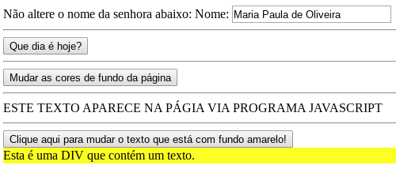
Outra ação javascript da página é a obtenção da data atual (Código 3.10, linhas 15 a 17). O comando new Date() retorna a data atual, que é armazenada na variável hoje (linha 16). Esse comando de atribuição é envolvido pelas tags <script> e < nscript>. Quando um certo botão é clicado (linha 18), uma mensagem é exibida por meio da caixa de diálogo (comando alert).
Na sequência, encontra-se definida uma função chamada mudar_fundo (Código 3.11, linha 23). Diversas execuções do comando setTimeout são responsáveis por alterar a cor de fundo do documento (linhas 24 a 30). O comando setTimeout executa uma ação (primeiro parâmetro) após esperar um certo tempo especificado em milisegundos (segundo parâmetro). Após a definição da função, ela é associada ao clique de um botão (linha 33).
O quarto exemplo de comando javascript é o simples preenchimento de um texto na página quando a mesma é aberta (Código 3.12, linhas 37 a 39). O comando document.write exibe na página o texto informado como parâmetro. Esse texto é inserido na posição em que se encontra o comando.
Por fim, é apresentado outro código javascript que realiza prenchimento de um texto na página (Código 3.13, linhas 43 a 52). Porém, desta vez o texto é inserido em um local específico: um elemento da página identificado como “caixa” (linha 45). O comando document.getElementById localiza um elemento na página por meio de seu “id”. Uma vez localizado o elemento, ele pode ser manipulado, por exemplo, inserindo-se código HTML em seu interior. No caso, foi utilizada a propriedade innerHTML para inserir um novo texto que possui formatação HTML para exibição com letras grandes (tag H1, linha 46). O código javascript está encapsulado em uma função (linha 44), que é associada ao clique de um botão (linhas 49 e 50). Concluindo o código da página, o elemento chamado “caixa” é uma div (linha 51), que possui atualmente um texto sendo exibido em cor de fundo amarela. Após o acionamento do botão, apenas o texto será alterado (em seu conteúdo e tamanho).
Ação adicional javascript 1: confira um exemplo lúdico de javascript, no qual uma figura é alterada para simular o efeito de apagar e acender uma lâmpada: https://www.w3schools.com/js/tryit.asp?filename=tryjs_intro_lightbulb. Após a leitura desta seção, será que você consegue explicar o funcionamento desse código da lâmpada?
Ação adicional javascript 2: verifique o funcionamento dos exemplos “divertidos” de páginas com javascript neste endereço: http://www.hylson.com/javascript. Essas páginas foram criadas por alunos que cursaram a disciplina de Programação 2 no curso técnico em informática integrado ao ensino médio, do IFC Campus Blumenau, no ano de 2019. Verifique o código-fonte dessas páginas no link: https://github.com/hvescovi/programar2020/tree/master/02-front-end/03-javascript, dentro da pasta 01-divertidos. Os códigos desta seção usam, em geral, javascript puro. Teremos muito mais poder de programação com uso da biblioteca jQuery, descrita na seção a seguir.
A biblioteca jQuery consiste de um grande conjunto de funções escritas em javascript, e tem por objetivo facilitar o uso de javascript nas páginas HTML. Com jQuery, os comandos javascript podem ser utilizados de uma forma mais sucinta e fácil.
Considere como exemplo uma página HTML que possui uma caixa de texto e uma imagem (Figura 3.4). Acima da caixa de texto existe também uma div, cujo conteúdo será manipulado dinamicamente por linhas de código em javascript. Esses elementos podem ser identificados no código HTML da página (Código 3.14): a div (linha 12), a caixa de entrada (linha 14), um botão (linha 15) e a imagem (linha 16).
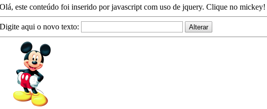
Para fornecer comportamento dinâmico à página, com uso das facilidades providas pela biblioteca jQuery, realiza-se a importação da biblioteca com o comando script (Código 3.15, linha 20). No exemplo, a importação é feita diretamente do site do jQuery.
Os comportamentos que estão programados para a página são os seguintes:
Fonte: https://github.com/hvescovi/programar2020/blob/master/
02-front-end/03-javascript/03-basico-jquery/index.html#L20
A execução correta do código javascript que utilizada a biblioteca jQuery na página é condicionada ao documento estar “pronto”, carregado com todos os seus elementos HTML. Para garantir isso, é comum embutir todo o script que faz uso da jQuery sob um comando que verifica se a página está carregada. Na versão mais recente da jQuery existe uma recomendação pelo uso da expressão reduzida $(function(){ (JQUERY, 2019), em detrimento do uso extendido $(document).ready(function(){. Porém, o fato de localizar os scripts ao final da página HTML dispensa a necessidade de se fazer a verificação de carregamento da página.
Exemplificando: se desejarmos proteger o nosso código javascript para que ele seja executado apenas quando a página estiver carregada, devemos localizar esse código conforme segue:
Outra forma de se utilizar esse comando seria assim:
Porém, como mencionamos, se o nosso código javascript estiver localizado ao final da página, o comando ready (ou sua forma reduzida) não é necessário, pois o código javascript será carregado naturalmente apenas depois que toda a página for carregada.
Desejamos agora fazer uma página que possa alterar dinamicamente a folha de estilos que é utilizada na página. Sendo assim, vamos criar três links para que cada um deles possa acionar uma folha de estilo diferente (Figura 3.5).

Na página HTML o link para o arquivo de folha de estilo deve ser criado possuindo um identificador (Código 3.16, linha 7), que será alterado conforme o usuário clica nos links. Deve haver três arquivos de estilo, sendo que inicialmente a página é exibida com o arquivo de estilo chamado “azul.css”. Cada link que altera o estilo possui em seu identificador o nome do arquivo de estilo a ser carregado quando o link for clicado (linhas 11 a 13).
A parte de código javascript inicia importando a biblioteca jQuery (Código 3.17, linha 16). A seguir, o evento de clique de mouse é capturado e associado a qualquer elemento que utilize a classe de estilos chamada “mudar” (linha 19). Note que os links que mudam o estilo da página estão utilizando esse estilo. Quando o link for acionado, a folha de estilos da página é alterada (linha 22).
Vamos detalhar a linha de comando 22:
Após clicar no link amarelo, será exibida a página fazendo uso da folha de estilos “amarelo.css” (Figura 3.6). As folhas de estilo azul e amarelo variam apenas a cor de fundo e o tipo de letra utilizados (Códigos 3.18 e 3.19).
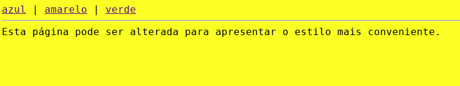
No terceiro exemplo, vamos apresentar uma página que contém uma figura que se move de acordo com a movimentação do mouse (Figura 3.7). O código HTML desta página contém a imagem do carro (Código 3.20, linha 12). Essa imagem é identificada pelo nome “carro” e possui um estilo de posicionamento absoluto, para que a mesma possa ter suas coordenadas alteradas dinamicamente. A biblioteca jQuery é importada (linha 14), seguido pela importação também do nosso código javascript (linha 15). Esse exemplo apresenta uma organização de arquivos na qual a imagem fica em uma pasta chamada “img” e os códigos javascript personalizados se encontram dentro de um arquivo externo, em uma pasta chamada “js”.
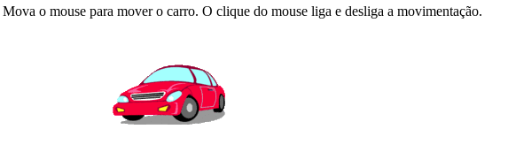
O código javascript inicia com a criação de uma variável local chamada mover (Código 3.21, linha 4). Essa variável indica se o carro deve se mover (valor igual a 1) ou se o carro deve ficar parado (valor igual a 0). A seguir, captura-se o evento de movimentação do mouse na tela (linha 7). Quando esse evento ocorrer (mousemove), serão realizadas diversas ações. É preciso, assim, embutir as ações no interior de uma função, e por isso existe a expressão funcion(event). Essa função, entretanto, não possui um nome e existe apenas para agrupar os comandos que estão em seu interior. A função inicia verificando se a movimentação do carro está ativada (linha 10). Em caso positivo, obtém-se as coordenadas atuais do mouse (event.pageX e event.pageY), que são atribuídas às propriedades top e left do elemento chamado “carro” (linhas 12 a 14). Essas propriedades são manipuladas por meio de estilos (por isso a propriedade se chama css), ainda que não haja um arquivo de folhas de estilo sendo utilizado no exemplo. Por fim, se ocorrer um clique de mouse (linha 20), esse evento muda a situação da variável mover (linha 22). Essa expressão de linha única significa que caso o valor da variável seja igual a 1, então deve-se atribuir zero à variável; caso contrário, deve-se atribuir 1 à variável. Assim, o valor é sempre alternado entre os valores zero e um.
AÇÃO ADICIONAL JQUERY: verifique o funcionamento dos exemplos de páginas com javascript que utiliza jQuery neste endereço: http://www.hylson.com/javascript. Verifique o código-fonte dessas páginas, disponíveis neste link: https://github.com/hvescovi/programar2020/tree/master/02-front-end/03-javascript/
Este capítulo abordou elementos que integram um front-end. Foram descritos fundamentos de código HTML e folhas de estilo CSS, essenciais na criação de páginas web. Introduziu também o framework bootstrap para fornecer uma melhor aparência e responsividade às páginas. Por fim, apresentou a linguagem javascript, que provê comportamento dinâmico às páginas, e incluiu exemplos de uso da biblioteca jQuery, a fim de simplificar o código necessário à execução de programas nas páginas web.
Os quatro amigos Pedro, Túlio, Gabriela e Agnes começaram a criar programas que manipulam uma quantidade maior de dados. Tornou-se, assim, necessário fazer um agrupamento de dados coerente. Pedro é o aluno mais metódico do grupo, e como pessoa prevenida que é fez uma leitura sobre um assunto que propõe uma forma viável de agrupar dados: o paradigma de orientação a objetos. Nesse paradigma, os dados são agrupados por analogia a objetos do mundo real. Por exemplo, os dados de uma pessoa são reunidos em um objeto do tipo “Pessoa”. As informações de um automóvel são reunidas em um objeto do tipo “Automovel”. Podem ser criadas várias pessoas e vários automóveis. Essas instâncias de pessoas e automóveis são denominados Objetos. A generalização de um objeto é denominada Classe. Portanto, da classe Pessoa pode-se instanciar uma pessoa com nome igual a “Joao da Silva”, telefone igual a “47 9923 3434” e email igual a “jsilva@gmail.com”. Essa organização de informações em uma classe é a base da orientação a objetos.
Túlio, que é ávido por resultados, complementa a apresentação desse conceito aos colegas, mencionando que existem também as ações que podem ser realizadas sobre os dados. Comportamentos ou ações são processamentos sobre os dados e podem ser vinculados, portanto, às classes. Por exemplo, um automóvel pode possuir uma ação chamada “ligar”, que provoca o acionamento do carro. Outra ação possível de um automóvel pode ser a ação “frear”. Cada ação definida em uma classe é denominada método da classe. Após uma discussão inicial sobre esses conceitos, os amigos buscaram na literatura algumas definições sobre o termo classe:
As classes são instanciadas em objetos, dos quais se pode invocar as operações públicas na forma de mensagens. No entanto, nem todas as classes permitem sua instanciação direta em objetos. As classes que permitem tal ação são chamadas classes concretas. Em muitos casos, pode ser necessária a criação de classes que apenas descrevem conceitos abstratos e que não são transformados em objetos diretamente, as chamadas classes abstratas. Essas classes devem ser herdadas por outras classes concretas, que irão implementar os conceitos abstratos criando uma classe concreta que pode ser instanciada. (DEBONI, 2003, p. 113)
Obtém-se também desse autor definições objetivas sobre a declaração de métodos de uma classe, bem como detalhamentos sobre os métodos nas classes concreta e abstrata:
A assinatura de uma operação ou método é o nome da operação e seu conjunto de parâmetros. Um método abstrato não possui o corpo do método no qual se encontra o algoritmo que o implementa. Uma classe abstrata pode possuir métodos concretos [...].Para uma classe abstrata torna-se concreta, ela deve ser herdada por outra que irá sobreescrever os métodos abstratos com métodos concretos. (DEBONI, 2003, p. 113)
Após a observação teórica dos conceitos, surgiu a necessidade de conhecer a aplicação prática dessas definições.
Como início dos estudos, Gabriela tomou a palavra e sugeriu aos amigos fazer um programa abordando apenas informações básicas e conhecidas por todos. Recomendou, assim, armazenar apenas as informações sobre uma pessoa: nome, email e telefone.
Pedro apresentou a seus amigos a forma mais básica de implementar um classe Pessoa (Código 4.1). Foi criado um módulo (pacote) denominado modelo (linha 1) para agrupar as classes, que são modelos de objetos do mundo real. O nome da classe foi definida como “Pessoa” (linha 3), e os atributos de nome, email e telefone foram definidos como sendo do tipo texto (tipo String; linhas 5 a 7). Após a criação da classe, é preciso fazer um “teste” do programa, criando objetos. Toda classe no Java possui um método executável denominado “main” (linha 9). Esse método permite ao programa Java tornar-se um programa “executável”. Sendo assim, como primeira ação criou-se um objeto do tipo pessoa (linha 11). A seguir, foram definidos valores para o objeto (linhas 13 a 15). Por fim, foram exibidos os valores do objeto, para fins de teste da classe (linha 17).
Pedro, que é o rapaz “certinho” e adora seguir os padrões, observou a primeira versão do programa e sugeriu a primeira mudança: separar o programa em duas partes. A primeira parte vai conter apenas o código do programa de “definição da pessoa” (Código 4.2). Nesse programa temos apenas as informações que serão armazenadas pela classe (Código 4.2, linhas 5 a 7). Esse código pode ser utilizado posteriormente por outros programas para “criar” pessoas, definir os valores dos dados dessas pessoas e utilizar essas informações.
O segundo programa será um código apenas para fazer um “teste” da classe Pessoa (Código 4.3). Em outras palavras, esse programa de teste serve para verificar se a classe funciona da forma esperada.
Após a leitura cuidadosa dos códigos por todos, inicia-se um diálogo entre os amigos:
|
— (Túlio) Olha só, por que a palavra public foi inserida na classe Pessoa? — (Pedro) Essa declaração é necessária porque uma OUTRA classe vai usar a classe Pessoa. Quando a gente não declara uma classe pública, ela não pode ser usada por outras classes. — Ok. Obrigado. Notei que essa palavra (public) também entrou nos atributos da classe (linha 3 do Código 4.2). Confere? — Sim. Assim como a classe vai ser usada por outro programa, se os atributos vão ser modificados por outro programa, é necessário torná-los públicos. Caso contrário, não poderiam ser acessados diretamente. — Mais alguma mudança nesse código “separado”? — Sim! Como o programa de teste “usa” a outra classe, é preciso declarar esse uso. Em outras palavras, importar a classe (linha 3 do Código 4.3). — (Gabriela) Que legal! E de onde vem essa classe importada? — (Pedro) Vem do código que declara a classe. Ambos os códigos estão no mesmo projeto, apenas encontram-se em pacotes separados. A definição da classe está no pacote modelo e o programa que usa uma instância da classe está na classe teste. — (Agnes) Tá falando difícil hein Pedro? O que é instância? — É um objeto da classe rsrs isso não é difícil. — Agora não mais! Obrigada! |
Em determinado momento que os amigos estavam programando, alguém se deu conta de que já havia visto em algum exemplo de programação um comando que criava objetos no qual os valores do objeto eram informados todos de uma só vez, juntamente com o comando de instanciação. Agnes não se conteve com esse comentário e procurou na internet algo sobre isso. Encontrou, assim, informações sobre o termo “construtor”. E inicia-se um diálogo:
|
— (Agnes) Pessoal, para tudo! Encontrei uma forma mais simples e concisa de criar objetos. É só a gente usar um construtor com parâmetros. — (Pedro) Hahaha! Isso tá parecendo conversa de construção civil. — É sério! Quando for criar o objeto, já dá pra informar todos os valores dos campos junto com o nome da classe. — (Túlio) Interessante. Tens um exemplo? — Sim! Vou mostrar com esse exemplo da classe Pessoa que estamos desenvolvendo. Olha só, em vez de usar só o comando new Pessoa(), eu posso colocar diretamente os dados da pessoa dentro dos parênteses. Fica assim: new Pessoa(“João da Silva”, “jsilva@gmail.com”, “47 9 9223 1001”). — (Gabriela) Gente! Amei. Menos linhas de código! Fica mais compacto assim. Mas como vou saber a ordem dos dados? Por que você colocou email e depois o telefone? — (Agnes) Hum... em algum lugar isso está definido. Essa ordem é a gente que estabelece. Aí quando for usar basta seguir a ordem). |
Nesse momento de leitura do código, Gabriela tem uma dúvida e não se demora a pergunta:
|
— (Gabriela) Pessoal, quem pode me explicar o que significa essa palavra this? — (Pedro) Em que lugar Gabriela? — Ali na linha 16 do Código 4.4. — Hum... ok. A questão é a seguinte: os valores dos atributos nome e email foram passados via parâmetro pelo construtor sob os seguintes nomes, respectivamente: n e e. Certo? — Sim. E o terceiro parâmetro foi informado sob o seguinte nome de parâmetro: telefone — Muito bem. Agora imagine se a atribuição do valor do parâmetro para o atributo fosse executada da seguinte forma: telefone = telefone. O que você acha? — Estranho. É igual fazer x = x. E agora? — Então, por isso foi utilizada a palavra this. Ela significa que o nome utilizado a seguir é um atributo da classe, ou seja, pertence a esta classe. Assim, deseja-se que o valor do parâmetro seja atribuído ao valor do atributo: this.telefone (valor do atributo) = telefone (valor do parâmetro). — Beleza Pedro! Entendi. Obrigada! |
Durante os estudos de nossos quatro amigos, Gabriela pensou se não havia uma maneira de validar dados no momento em que os objetos eram criados. Esse é um nível muito baixo de validação, mas essa dúvida não saiu de sua cabeça. Inicia-se assim um diálogo:
|
— (Gabriela) Pessoal, tenho uma questão. Será que existe uma forma de validar os dados de um objeto no momento em que esse objeto é criado? — (Agnes) Ah, você poderia colocar um “if” no programa que testa o objeto, para verificar os valores desejados. — Sim, mas eu gostaria de fazer essa validação dentro da própria classe que fornece os objetos. — (Pedro) Isso não é trivial, se você acessar diretamente o atributo como estamos fazendo. Por exemplo, se eu utilizar p1.email = “mariasilva@gmail.com”, como vou fazer para verificar se, por exemplo, foi informado o caracter arroba no email? — (Tulio) Gente, tenho a resposta pra vocês. Eu já fiz exatamente isso uma vez: validar email. O que precisa ser feito é usar um método para colocar o valor no atributo, em vez de acessá-lo diretamente. — (Gabriela) Que legal! Posso fazer um método, por exemplo, chamado informarValorDoEmail? — (Tulio) Não. Existe um padrão para esses métodos, que são inclusive conhecidos como setters e getters. — (Pedro) Na verdade, até poderia usar o seu nome sugerido. Mas realmente ia ficar fora do padrão, e isso não é bom, né? — (Agnes) Ah, quem sabe alguém poderia imaginar um nome melhor para o método que vai colocar o valor de um email. — (Pedro) Vamos lá, foco! O nome ideal para o método que coloca valor no campo email é setEmail. — (Gabriela) Certo. E dentro desse método, daí, eu verifico se o valor informado tem uma arroba. Certo? — (Tulio) Certo. |
O programa que faz uso da classe Pessoa (Código 4.7) instancia dois objetos: João (linha 9) e Maria (linhas 15 e 16). Os dados de João são informados um de cada vez (linhas 11 a 13), enquanto os dados de Maria são informados no mesmo momento da criação do objeto (linhas 15 e 16). Por fim, os objetos criados tem seus valores exibidos (linhas 18 a 21). Essa ação de exibição é importante para saber se o objeto teve seu funcionamento conforme esperado.
Túlio foi o responsável por apresentar a classe Pessoa em uma implementação mais sucinta na linguagem python (Código 4.9). O construtor da classe é definido pelo método __init__ (linha 4), no qual existem parâmetros que podem receber os valores do objeto. A palavra self define que o método pertence à classe. Dentro do construtor, os atributos são declarados também usando o termo self (linhas 5 a 7). Tal termo é similar ao this do Java. Cada valor de parâmetro do construtor é associado ao respectivo atributo. Um método denominado __str__é criado para facilitar a execução dos testes (linha 10). Esse método expressa um objeto da classe em termos de string, e também usa o termo self para demonstrar sua associação com a classe (ele pertence à classe).
Fonte: https://github.com/hvescovi/programar2020/blob/master/
01-oo/01-pessoa/python/modelo.py#L1
Iniciando os testes da classe (Código 4.8), verifica-se que o programa está sendo executado ou importado por outro arquivo (linha 16).Caso esteja sendo executado, realiza-se o teste da classe, iniciando com a criação de uma pessoa (linha 19). Os dados da pessoa são informados nas linhas seguintes (19 a 21). O construtor permite criar pessoas também informando os valores diretamente (linha 24). Além disso, podem ser informados apenas alguns valores (linha 27), sendo que os valores obedecem à ordem de declaração definida no construtor. Por fim, todos os dados das pessoas são exibidos (linha 30).
Fonte: https://github.com/hvescovi/programar2020/blob/master/
01-oo/01-pessoa/python/modelo.py#L1
A execução do programa resulta na exibição de todos os dados que foram definidos (Tabela 4.1).
Considere um programa que exibe alguns dados cadastrais de uma pessoa (Código 4.10). Considerando as informações de nome, data de nascimento e número de RG, essas três informações podem ser armazenadas em três variáveis (linhas 6 a 8). A seguir, as informações são exibidas (linha 10).
O mesmo programa pode ser construído segundo um paradigma de orientação a objetos (Código 4.11). Os dados da pessoa são agora informados logo após a declaração da classe (linhas 4 a 6), e o método main da classe agora cria uma variável do tipo Pessoa (linha 8), associa valores aos atributos do objeto (linhas 9 a 11) e exibe os dados (linhas 13 e 14). Compare as versões dos programas estruturado e orientado a objetos para poder observar as diferenças.
Fonte: https://github.com/hvescovi/programar2020/blob/master/
99-fundamentos/java/basico/Pessoa.java#L1
A orientação a objetos muda a maneira como as ações são invocadas sobre os dados. Como exemplo, considere a execução de funções matemáticas. Para calcular a raiz quadrada de um número, na linguagem PHP utiliza-se a função sqrt será aplicada ao número 9. O comando em PHP, portanto, é o seguinte: echo sqrt9;. Na orientação a objetos, em Java, existe uma classe Math que possui o método estático sqrt. Dessa forma, para se obter uma raiz quadrada de nove, executa-se o comando: Math.sqrt(9) (Código 4.12, linha 10). O comando sqrté um método, e não simplesmente uma função. Esse método é estático, pois não é preciso instanciar um objeto da classe Math, e pertence à classe Math.
A manipulação de texto é mais um exemplo prático de como a orientação a objetos altera a forma de realizar as operações. Para obter uma substring de um texto, na linguagem PHP se utiliza a função substr, informando o texto, o início e a quantidade de caracteres. Desse modo, o comando substr(“Alô mundo”, 4, 3) retorna a substring “mun”, pois a substring inicia na posição 4 (contando a partir de zero) e retorna os próximos 3 caracteres. É possível testar esse comando no site http://phptester.net/. Em java, a ação de obter uma substring é realizada pelo comando substring, mas não como uma função, e sim como um método. Isso significa que em vez de aplicar o comando à string, o comando “faz parte da string”, ele “está na string”, é uma ação que “vem junto” com o objeto string. Nesse caso, então, a substring “mun” pode ser obtida usando o método substring do objeto (Código 4.13, linha 15). Os parâmetros do método substring são a posição inicial e a posição final, de forma que o caracter da posição final não será incluído no retorno do método. Note que o comando de obter substring do java é diferente com comando de obter substring do PHP, tanto no nome do comando quanto no significado de um dos parâmetros. O comando substring está disponível no objeto do tipo String (linha 13). Uma outra possibilidade é aplicar o método substring diretamente em uma string, sem declarar variável (linha 18). Isso é possível pois, em Java, qualquer String é considerada um objeto, mesmo que esse objeto não possua uma referência direta (uma variável apontando para ele). No caso do exemplo, não existe uma variável apontando para o conteúdo “Tudo vira objeto” (existente na linha 18).
Por fim, considere o caso de calcular o perímetro de um círculo e exibir as informações desse círculo (Código 4.14). As coordenadas do círculo são armazenadas em variáveis apenas para localizar o círculo em um plano cartesiano (linhas 22 e 23). O raio é a informação necessária para o cálculo do perímetro (linha 24), que consiste em 2 � � � r, sendo que r denota o raio. O cálculo do perímetro foi designado a um método que será descrito mais adiante, chamado calcularPerimetro. Uma outra maneira de modelar e resolver esse problema do círculo consiste na instanciacao de um objeto Circulo (linha 30), que contém os atributos x e y (linhas 31 e 32) e contém um método chamado perimetro (linha 35), que retorna o valor do perímetro. O raio é informado após a criação do círculo (linha 33).
O método calcularPerimetroé definido como um método estático (Código 4.15, linha 39). Dessa forma, o método pode ser usado para realizar o cálculo do perímetro com base no raio (linha 40). O objeto círculo pode ser instanciado graças à definição da classe Circulo (linha 44), que contém os atributos x, y e raio (linhas 45 a 47). O cálculo do perímetro foi designado ao método chamado perimetro (linha 48).
Classes podem estar relacionadas entre si. Uma das relações mais utilizadas na programação orientada a objetos é a agregação. Essa relação geralmente expressa uma relação de partes entre os objetos, no sentido de que um objeto é formado (em suas partes) por outros objetos:
Agregação é um tipo especial de associação onde se tenta demonstrar que as informações de um objeto (chamado objeto-todo) precisam ser complementadas pelas informações contidas em um ou mais objetos de outra classe (chamados objetos-parte) (GUEDES, 2018, p. 111).
A agregação pode ser representada graficamente no diagrama de classes (UML), tal que sua representação consiste de “uma linha conectando as classes relacionadas, com um diamante (losango) branco perto da classe que representa o todo” (BEZERRA, 2006, p. 104). Um detalhe que diferencia a agregação é que: “é uma associação em que um objeto é parte de outro, de tal forma que a parte pode existir sem o todo” (SAUVE, 2020).
Como exemplo de agregação, podemos citar os objetos Casa e Espelho (VENTURA, 2020). Uma casa e um espelho possuem características e funcionalidades próprias, e pode ser utilizados de maneira independente. Esses objetos, porém, podem ser combinados (agregados) para funcionar da forma desejada (Figura 4.1).
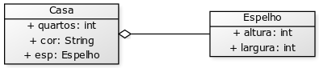
A classe Espelhoé definida com as informações de largura e altura (Código 4.16).
A classe Casa possui a informação sobre o número de quartos e a cor (Código 4.17, linhas 5 e 6). É possível também definir que na casa pode haver um espelho (linha 7). A exibição das informações da casa é definida no método toString (linha 10) e inclui uma estrutura condicional: a informação do espelho apenas será exibida caso haja espelho definido na casa (linha 12).
A execução do teste de um objeto do tipo Casa (Código 4.18, linhas 17 a 26) resulta na exibição da seguinte mensagem: “Casa de 3 quartos, azul, com espelho de 20 por 30 (centímetros)”, pois a casa em questão possui espelho.
O programa do espelho e da casa, em sua versão python, encontra-se em um único arquivo (Código 4.19). Os objetos são criados com valores fornecidos diretamente na instanciação dos objetos (linhas 19 e 20). O método que retorna a descrição textual do objeto chama-se __str__ (linha 11), cujo retorno também é condicionado pela existência de um espelho (linha 13).
Fonte: https://github.com/hvescovi/programar2020/blob/master/
01-oo/02-casa-espelho/python/modelo.py#L1
Pode-se definir com composição o relacionamento entre classes que formam uma estrutura do tipo “parte” e “todo”, de maneira que não é possível haver a “parte” sem o “todo”. Essa relação é semelhante à relação de agregação, no que se refere a um elemento fazer parte de outro. Porém, a diferença encontra-se na dependência do “todo” para haver sentido na existência das “partes”. Em outras palavras: “Uma composição denota uma associação e descreve uma hierarquia todo-parte, onde a parte composta é existencialmente responsável por suas partes” (WEILKIENS, 2006, p. 155). Há autores que definem a composição como uma derivada da agregação: “Se a associação é exclusiva, no sentido de que um objeto não pode ser parte de outro objeto ao mesmo tempo, então ela é considerada uma forte associação parte-todo, e é denominada agregação composta” (WAZLAWICK, 2014, p. 129).
Uma outra forma de compreender essa relação pode ser data por meio de um exemplo: a relação pai e filho. Um pai existe sem o filho, mas um filho não existe sem um pai. Essa não é exatamente uma relação “todo-parte”, mas por analogia, pode-se trazer o seguinte raciocínio desse exemplo: uma parte não existe sem o todo, o que não impede que o todo exista sem a parte.
Um exemplo pode ser observado na relação entre um círculo e o ponto que define o seu centro (Figura 4.2). O centro de um círculo faz parte dele, de forma indissociável. Já a relação entre pontos e um polígono não é de composição, visto que os pontos (partes) podem existir sem a necessidade de haver o polígono (todo) (Figura 4.3). Nas palavras do autor,
[...] o “centro” de um “Círculo” não tem existência independente deste; enquanto a Figura 4.3 indica que cada “ponto” existe independentemente do “Polígono” ao qual serve de “vértice”.
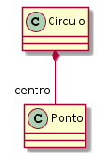
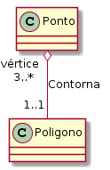
O exemplo da casa e do espelho (Seção 4.3) pode ser ampliado (Figura 4.4), incluindo-se os quartos e generalizando-se o espelho para mobília: “uma casa consiste de um ou mais quartos, e um quarto pode conter um número arbitrário de mobílias.” [p. 156](WEILKIENS, 2006). Na agregação entre o quarto e as mobílias, temos que “o quarto é o todo e as mobílias são as partes. Mas o quarto não é existencialmente responsável pelas mobílias.”.
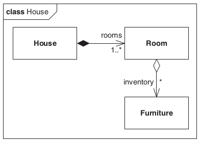
Porém, na relação entre a casa e os quartos, observa-se que:
A casa é o todo e é responsável pelas partes, os quartos. Se a casa for removida, então os quartos desaparecerão, mas não a mobília. A parte composta é aqui também definida como proprietária das partes, posto que a mesma é responsável por elas. De maneira similar ao mundo real, pode haver somente um proprietário para uma parte da composição (WEILKIENS, 2006, p. 156).
Como um segundo exemplo, considere a modelagem de pedidos de livros em uma livraria (Figura 4.5). Um pedido é composto de vários itens (*), e um item pode pertencer a apenas um pedido (1). Tal relação é forte de maneira que não há sentido existir um item desvinculado de um pedido. Naturalmente, ao destruir-se um pedido, os itens desse pedido também devem deixar de existir. Representa-se, assim, essa relação com um losango (diamante) preenchido. Um item de pedido contém um livro, e um livro pode aparecer em mais itens de um pedido (possivelmente o item não comporta o atributo quantidade, o que poderia alterar a multiplicidade da relação entre livro e item).
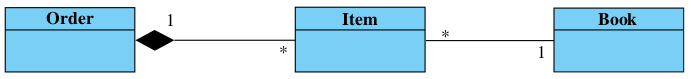
Sobre a diferença entre agregação e composição, menciona-se que “a composição é um tipo de associação com restrições reais e impacto no desenvolvimento, enquanto a agregação é puramente uma indicação funcional da natureza da associação, sem impactos técnicos” (BELLEKENS, 2019). Uma forma implementar uma classe que se relaciona com outra por meio de composição é inserir em no construtor da classe “todo” uma restrição de que precisa existir a classe “parte” para que a classe “todo” seja instanciada. Dessa maneira se garante que a não haverá um “todo” criado sem a “parte”.
Existem classes que possuem atributos e métodos semelhantes. Tais classes podem ser relacionadas de maneira a compartilhar suas informações e comportamentos, aumentando assim o reaproveitamento de código. Pode-se formalizar a relação entre essas classes é uma generalização, pois é possível reunir informações e comportamentos de duas ou mais classes em uma outra classe “superior”, que torna-se “pai” dessas outras classes. Tal relação é conhecida também como herança, pois na prática ocorre que uma classe herda (recebe, tem à disposição) atributos e/ou métodos de outra classe. É possível também dizer que:
[...] usamos herança para classificar objetos em taxonomias. Isso nos permite diferenciar o comportamento comum do caso geral, isto é, a superclasse (também chamada de classe base) do comportamento que é específico para objetos especializados, isto é, as subclasses (também chamadas de classes derivadas) (BRUEGGE; DUTOIT, 2010, p. 313).
Destaca-se também que “O termo herança também é comumente utilizado como sinônimo do relacionamento de generalização. No entanto, é mais adequado dizer que a herança corresponde à implementação da generalização em alguma linguagem de programação orientada a objetos” (BEZERRA, 2006, p. 191).
Considere os papéis de motorista e vendedor que uma pessoa pode exercer (Figura 4.6). Um motorista precisa ter registrada a sua carteira nacional de habilitação (CNH), enquanto o vendedor pode ter registrado no sistema a comissão por vendas. Ambos os papéis compartilhar informações comuns, como nome, cpf e email.
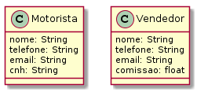
A generalização de motorista e vendedor resulta na criação de uma entidade superior, que pode se chamar Pessoa (Figura 4.7). Os atributos comuns são levados à classe Pessoa, enquanto os atributos diferenciados permanecem nas classes especializadas.
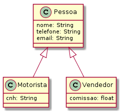
A implementação de herança em python se inicia pela definição da classe mãe de forma similar à definição comum de classes (Código 4.20, linhas 1 a 6). O construtor da classe (linha 2) abriga os atributos que devem constam na classe (linhas 3 e 4). Os atributos telefone e email são definidos na mesma linha, com uso do delimitador ponto-e-vírgula (linha 4). O método __str__ expressa a classe em termos textuais.
O vendedor é definido em termos de uma pessoa, herdando os atributos da pessoa (Código 4.21, linha 8). A declaração da classe é feita utilizando-se o nome da classe mãe entre parênteses. No construtor da classe (linha 9), a primeira ação é executar o construtor da classe mãe (linha 10), a fim de construir o objeto ancestral conforme os requisitos que a classe ancestral requer. A seguir, o campo específico da classe filha (comissão) é definido (linha 11). A expressão textual do objeto inclui primeiramente os dados textuais da classe mãe (linha 13), seguida pelo atributo específico.
A classe motorista é definida de forma que os atributos possam ser passados como uma lista de parâmetros (Código 4.22, linha 16). Os dois asteriscos especificam que será passada uma lista de parâmetros na construção da classe, sendo que os atributos antes dos dois asteriscos devem ser informados primeiro. Primeiramenteo, o construtor da classe mãe é invocado (linhas 17 e 18), obtendo-se os nomes dos parâmetros com uso do método get. Por fim, o atributo específico é associado ao parâmetro informado (linha 19). O método de expressão textual da classe mãe também é utilizado nessa classe filha (linha 21), juntamente com o atributo da classe específica.
O teste das classes é realizado criando-se um vendedor (Código 4.23, linhas 23 e 24) e um motorista (linhas 26 e 27). Os objetos são impressos de forma textual com a simples ação do comando print nos objetos (linhas 25 e 28), dada a existência dos métodos __str__ nas classes. Os dados são exibidos (linhas 30 e 31), sendo que o telefone do vendedor não é exibido, pois esse atributo não foi informado na criação do objeto.
Outro exemplo de herança consiste nas relações entre as contas bancárias do tipo poupança e conta corrente (Figura 4.8). Uma conta bancária possui informações como número de conta, data de abertura e saldo, além das operações básicas de creditar e debitar. Podem ser identificadas características peculiares das contas corrente e poupança: a conta corrente possui um limite de saque, enquanto a conta poupança possui uma data de aniversário e um percentual de rendimento. A generalização permite que os modelos diferentes de conta possam conter apenas as características específicas, enquanto o modelo geral de conta contém os atributos comuns a ambos os tipos de contas. As contas específicas também possuirão, por herança, os atributos e métodos pertencentes à conta geral. A classe ContaBancária se encontra em itálico devido ao fato de a mesma ser uma classe abstrata. Em outras palavras, não é possível instanciar uma conta bancária, mas apenas uma conta corrente ou uma conta poupança. Em muitos casos não se deseja permitir que a superclasse seja instanciada, mas apenas as classes especializadas.
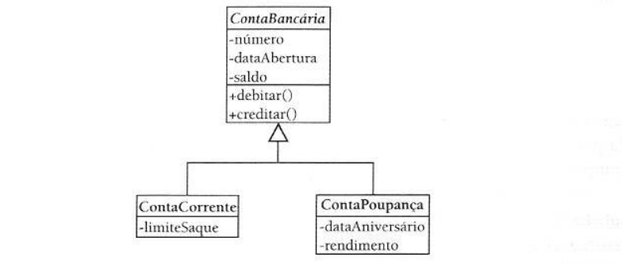
A operação de generalização (herança) fornece métodos às subclasses. Eventualmente, deseja-se modificar o comportamento de um ou mais métodos herdados. O termo polimorfismo se refere ao uso de um método herdado, mas com o comportamento alterado. Define-se também que “Operações polimórficas são operações de mesma assinatura definidas em diversos níveis de uma hierarquia de generalização e que possuem comportamento diferente” (BEZERRA, 2006, p. 200).
Considere como um exemplo simples a operação de comer, no contexto de animais: um boi rumina a comida, enquanto um cavalo realiza a simples mastigação para ingerir o alimento. Pode-se, portanto, dizer que essa ação de comer é polimórfica, pois ela acontece de formas diferentes, a depender do animal que a realiza. Nesse mesmo exemplo, deseja-se obter a idade do boi em meses, pois a partir de 18 meses estima-se que o animal esteja pronto para o abate.
Usando método padrão: uma forma de modelar esse cenário é considerando que existe uma forma de comer padrão, e que outras formas de comer devem ser redefinidas (Figura 4.9). No caso, pode-se definir que o padrão de comer seja “mastigar”. O método “comer” será, então, redefinido na classe Boi, especificando que esse animal deve ruminar. A informação sobre a data de nascimento é útil para todos os animais (ainda que tal informação não seja requerida para o cavalo); pode, assim, permanecer na classe ancestral (Animal). O método que retorna a idade em meses pode ser disponibilizado apenas para o Boi.
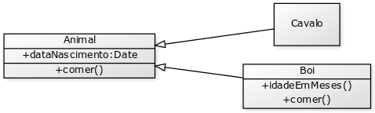
Na implementação padrão, o método comeré definido quando se encontra no construtor padrão (Código 4.24, linha 10). Animais criados sem especificação de data de nascimento recebem a data do sistema como dia do nascimento (linha 14). É possível também criar um animal informando sua data de nascimento (linhas 17 a 21).
Usando método abstrato: outra forma de modelar o boi e o cavalo é considerar que animal deve especificar qual é a forma de comer praticada (Figura 4.10). Na classe geral (Animal) se especifica apenas que deve haver método comer, sendo esse método implementado pelas subclasses. Tal aspecto pode ser realizado definindo-se a super classe como sendo abstrata (palavra abstract). O método comer da classe Animal também deve ser abstrato.
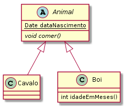
A segunda implementação apresenta o método comer como sendo abstrato (Código 4.25, linha 26). O próprio animal também é uma classe abstrata (linha 6), não podendo ser diretamente instanciado.
A generalização fornece às classes especializadas um comportamento peculiar que pode variar conforme a linguagem de programação: além de fornecer os atributos e métodos, também fornece o comportamento da construção do objeto geral. Em outras palavras, quando ocorre a construção da classe específica, deve ocorrer também a construção da classe geral.
Considere um exemplo simples: as classes Animal e Gato (Figura 4.11). Todo animal come, logo o método dessa ação foi definido na superclasse. Naturalmente, tal ação é “fornecida” à subclasse. A identificação de uma generalização é popularmente realizada por meio da expressão “é um”. No exemplo, temos que um gato é um animal.
A implementação dessas classes contém mensagens a fim de demonstrar a execução encadeada de construtores. Para tanto, será exibida uma mensagem de criação do objeto no construtor de cada classe. No exemplo dos animais, nas próximas linhas pode ser vericado que o construtor é automaticamente executado na implementação em java, mas na implementação em python tal fato não ocorre.
O código das classes em Java requer o uso de arquivos separados para cada classe (Códigos 4.26 e 4.27 para Animal e Gato, respectivamente).
O teste das classes consiste em criar um animal e um gato, e fazer ambos executarem a ação comer (Código 4.28).
Após a execução do teste das classes, são exibidas as seguintes mensagens:
Tal exibição consiste no fato de que a criação de um gato implica na criação de um animal. Ambos os construtores, portanto, são executados na criação de um gato. A linguagem Java implementa esse recurso implicitamente, pois argumenta-se que pode haver inicializações na superclasse cuja execução seja mandatória para o bom funcionamento da subclasse (KEVIN, 2019). A peculiaridade do java em relação à invocação do construtor sem parâmetros da superclasse consta na documentação da Oracle, sobre o uso da palavra super:
Se o construtor da subclasse não invocar explicitamente o construtor da superclasse, o compilador java insere automaticamente uma chamada para o construtor sem argumentos da superclasse. Se a superclasse não possuir um construtor sem argumento, será apresentado um erro em tempo de compilação (ORACLE, 2019).
A implementação em python apresenta resultado diferente no teste da criação dos objetos (Código 4.29). O construtor do animal não é executado automaticamente quando um gato é criado.
Dessa maneira, a exibição das mensagens ocorre da seguinte forma:
Para que o construtor da superclasse seja executado, é necessário invocar o comando super (GOMEZ, 2019). Esse comando existe nas linguagens orientadas a objeto, e tem por objetivo acessar o objeto ancestral. Em python, para que o construtor do animal fosse executado durante a criação do gato, o comando super poderia ser incluído no construtor do gato, invocando o construtor da classe ancestral: super().__init__().
Quando um método herdado ocorre mais de uma vez (ou seja, encontra-se sob o mesmo nome) com diferentes formas de utilização (varia em termos de número ou tipo de parâmetros), diz-se que o método se encontra sobrecarregado. Um exemplo comum é a existência de múltiplos construtores de uma classe. No exemplo dos animais com uso de polimorfismo (Código 4.25), é possível criar um cavalo informando-se a data de nascimento ou criar uma subclasse de animal sem fornecer essas informações. O polimorfismo, nesse caso, refere-se ao fato de o método comer ser modificado na classe Boi.
Este capítulo forneceu uma visão geral sobre o uso de programação orientada a objetos (POO) para armazenar dados de sistemas. Os principais conceitos da POO foram explanados: encapsulamento de dados, agregação e composição, herança e polimorfismo. Esses conceitos são essenciais para organizar os dados de forma que possam ser persistidos (Capítulo 5) e fornecer os recursos necessários à construção de um sistema web completo (Capítulos 6, 7 e 8).
Após o desenvolvimento de uma classe, pode-se iniciar a manipulação de objetos a fim de torná-los persistentes no sistema. Todo sistema de cadastro atua assim: mantém dados armazenados, recupera-os, edita-os, etc. Os comandos que salvam e fazem a leitura dos dados dos objetos podem estar localizados em qualquer parte do programa. Por exemplo, assim que uma tela de cadastro é exibida, pode-se acessar o banco de dados, ler os dados necessários e então exibir as informações na tela. O problema é que os comandos de tela e de banco de dados, que possuem funcionalidades bem diferentes, ficam juntos. Isso dificulta a manutenção do código, além de tornar mais difícil também o desenvolvimento do sistema por equipes, visto que os códigos das funcionalidades diferentes estão muito próximos. Uma maneira de resolver essa situação é modularizando o sistema, dividindo-o em partes que podem se comunicar:
Em 1979, Tryge Reenskaug apresentou uma nova arquitetura para desenvolver aplicativos interativos. No seu projeto, os aplicativos foram divididos em três tipos de componentes: modelos, visões (interfaces) e controladores.
O modelo é responsável por manter o estado do aplicativo. Às vezes esse estado é transitório, durando apenas algumas interações com o usuário. Às vezes esse estado é permanente e será armazenado fora do aplicativo, frequentemente em um banco de dados.
Um modelo é mais que simplesmente dados: ele impõe todas as regras de negócio que se aplicam a esses dados. [...] A visão é responsável por gerar uma interface com o usuário, normalmente baseada nos dados do modelo. [...] Os controladores orquestram o aplicativo. Os controladores recebem eventos do mundo externo (normalmente uma entrada do usuário), interagem com o modelo e exibem uma visão apropriada para o usuário. (THOMAS et al., 2008, p.24)
A manipulação de objetos em um sistema pode ser feita por meio de um componente denominado DAO (Data Access Object) (Seção 5.1) ou com uso de um ORM (Object-relational mapping) (Seção 5.1).
Considere como exemplo o cadastro de pessoas e os livros que essa pessoa possui (Figura 5.1). A classe Livro contém, além de métodos set e get para acesso aos atributos encapsulados (Código 5.1, linhas 11 a 20), um construtor com parâmetros (linhas 22 a 24) e o método que expressa a classe por meio de texto (linhas 27 a 29). A anotação @Override tem por objetivo informar que o método toString está sendo sobreescrito. Isso é importante porque, em caso de erro de escrita (por exemplo, usar ToString em vez de toString) o compilador java vai informar um erro, em vez de criar um método diferente daquele que se deseja sobreescrever.
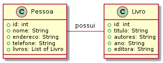
A classe Pessoa também possui seus atributos encapsulados e o atributo livros relaciona os livros que a pessoa possui (Código 5.2, linha 13).
No construtor da pessoa apenas os atributos da pessoa são informados (Código 5.3, linhas 23 a 26). No método que expressa a pessoa em forma textual, percorre-se a lista de livros que a pessoa possui (linha 33), a fim de obter também a informação dos livros, além dos atributos da pessoa. Um método específico é criado para adicionar um livro à coleção de livros da pessoa (linha 41).
A classe de acesso a dados (DAO) de livros e pessoas inicia com as devidas importações (Código 5.4, linhas 3 a 5), seguida por dois atributos que manterão os dados em memória, por meio de listas de objetos (linhas 11 e 12). As listas são declaradas como estáticas para que qualquer instância de DAO possa acessar os mesmos dados.
A manipulação de pessoas envolve primeiramente um método para retornar a lista de pessoas (Código 5.5, linha 15), seguido por um método para adicionar uma pessoa (linhas 16 a 31). A inclusão da pessoa envolve processamento para incluir um novo identificador para cada pessoa cadastrada. Nessa ação, inicia-se a busca com um valor igual a zero (linha 18), percorrem-se as pessoas cadastradas (linha 20), e a cada vez que uma pessoa com maior identificador é encontrada (linha 22), esse identificador torna-se o maior (linha 24). Por fim, a nova pessoa recebe um identificador de valor igual ao maior encontrado, mais um (linha 28).
Outros três métodos manipulam pessoas retornando a quantidade existente no cadastro (Código 5.6, linha 32), removendo uma pessoa (linha 33) e retornando uma pessoa com base em seu identificador (linha 34). Para retornar a pessoa, é preciso fazer uma busca na lista de pessoas, que se inicia com uma variável de retorno que indica o possível insucesso da busca (linha 36). A lista de pessoas então é percorrida (linha 38), até a conclusão dos elementos ou até que um elemento seja encontrado (linha 40), neste caso então retornando a pessoa que foi encontrada (linha 42) e encerrando a execução do método. Caso não seja encontrada nenhuma pessoa com o identificador buscado, retorna-se a variável de retorno que sinaliza o erro (linha 46).
A atualização das informações de uma pessoa (Código 5.7, linha 48) também envolve uma busca, que inicia com um sinalizador que indica o possível insucesso da busca (linha 50). Percorre-se a lista de pessoas (linha 52), desta vez com uso de índices, pois será necessário descobrir a posição da lista na qual a pessoa se encontra para que a mesma seja substituída pela pessoas com as novas informações. Ao encontrar a pessoa (linha 54), sinaliza-se tal fato (linha 55) e interrompe-se a busca (linha 56). Ao término do loop, se a pessoa foi localizada (linha 60), atualizam-se os dados da pessoa substituindo a pessoa da lista pela pessoa que foi fornecida como parâmetro (linha 62). O método set requer a posição do objeto a ser substituído, por isso é necessário localizar essa posição da pessoa na lista.
A manipulação de livros (Código 5.8) envolve inicialmente duas operações: a obtenção de todos os livros (67) e a inclusão de um livro (linha 68). O novo livro recebe um código que deve ser maior do que o último código existente, similar ao cadastro de pessoas. Inicialmente, define-se o maior índice igual a zero (linha 70), percorrem-se os livros (linha 72), e cada vez que um índice maior é encontrado (linha 74), atualiza-se o maior índice encontrado até o momento (linha 76). Esse índice, acrescido de um, será atribuído ao novo livro (linha 80), que por fim será adicionado na lista de livros (linha 82).
Por fim, no DAO há um método para fazer uma busca nos livros e listar aqueles que possuem em um ou mais de seus campos uma informação fornecida como critério de busca (Código 5.9, linha 85). Primeiramente, cria-se uma lista de livros a serem retornados, caso existam, que contém a sequência de busca procurada (linha 87). Converte-se a sequência busca para minúsculas, a fim de não diferenciar letras maiúsculas ou minúsculas na busca. Enquanto percorrem-se os livros (linha 91), converte-se cada livro percorrido para conteúdo textual minúsculo (linhas 93 a 96), e assim pode-se comparar os conteúdos sem diferença de letra maiúscula ou minúscula (linhas 98 a 101). Em caso de sucesso, adiciona-se o livro que atende ao critério de busca na variável de retorno (linha 103). Por fim, retorna-se a lista de livros que atende ao critério de busca (linha 106).
Os testes da classe DAO iniciam com a instanciação de um DAO (Código 5.10, linha 12). A seguir, são criadas três instâncias de livro (linhas 15 a 20), sendo adicionadas na camada de acesso a dados logo na sequência (linhas 21 a 23). Três pessoas também são criadas e adicionar à camada de dados (linhas 26 a 37). Para cada pessoa são registrados alguns livros que a pessoa possui, por meio do método registrarPosseLivro.
A exibição dos dados criados primeiramente apresenta a quantidade de pessoas no cadastro (Código 5.11, linha 41). Na sequência, exibem-se as pessoas do cadastro (linhas 42 a 44). O endereço de uma pessoa é alterada, para verificar o funcionamento do método que atualiza as informações de uma pessoa (linhas 48 a 50). Concluindo os testes com pessoas, busca-se por uma pessoa (linhas 53 e 54) e remove-se uma pessoa do cadastro, exibindo-se a quantidade de pessoas após a exclusão (linhas 57 a 59).
A exibição dos informações dos livros exibe todos os objetos que existem na lista (Código 5.12, linhas 62 a 65) e a seguir exibe livros que possuem a sequência de texto “na” em qualquer parte dos campos textuais do livro (linhas 68 a 72).
A execução do programa de teste (TestarDAO) resulta na seguinte saída:
Nesta seção as classes Pessoa, Motorista e Vendedor (descritas na Seção 4.5.1) serão implementadas em python com uso do framework SQLAlchemy (SQLALCHEMY, 2020c), de maneira que a herança será realizada de forma persistente. As importações de configurações aqui consideradas levam em conta o futuro uso do framework Flask (ver Seção 6.1) para a implementação de um back-end (Código 5.13). Dessa forma, são importados recursos das bibliotecas flask (linha 2), flask_sqlalchemy (linha 3) e os (linha 4). Na parte de configurações, primeiramente cria-se um objeto de acesso ao flask (linha 7). A seguir, obtém-se o caminho atual do presente programa (linha 8), seguido por uma concatenação deste caminho com o nome do arquivo de banco de dados (linha 9). No caso, é utilizado o banco de dados SQLite. O arquivo de banco de dados é configurado (linha 10) e a exibição de mensagens de advertência é desabilida (linha 11). Por fim, um objeto de acesso ao SQLAlchemy é criado (linha 12).
A classe Pessoa é definida a partir de uma herança da classe Model do SQLAlchemy (Código 5.14, linha 15). O atributo de chave primária autoincrementado é definido (linha 16), seguido pelos atributos da pessoa (linhas 17 a 19). A seguir, é criado um atributo específico para identificar, na tabela de persistência, qual é o tipo de pessoa (se houver) que deve ser vinculada às classes filhas (linha 22). Esse atributo é conhecido como atributo discriminador (SQLALCHEMY, 2020b). Esse campo pode armazenar um valor nulo para uma pessoa que não é vendedor nem motorista, pode armazenar o valor “motorista” caso exista um motorista que “seja” essa pessoa, ou pode armazenar o valor “vendedor” se essa pessoa for um vendedor. Para realizar esse mapeamento, são definidas características polimórficas: um identificador, no contexto de valor do atributo discriminador (linha 26), e o nome do atributo discriminador sobre o qual a classe atual é polimórfica (linha 27). Por fim é declarado o método que expressa a pessoa em modo textual (linha 29).
A classe Vendedor herda características da classe Pessoa (um vendedor “é uma” pessoa), e essa relação se manifesta na declaração da classe (Código 5.15, linha 32). O atributo identificador do objeto é criado especificando-se uma relação com a classe mãe (linha 35). O identificador do vendedor será o mesmo identificador da pessoa, já que “o vendedor é aquela pessoa”. A seguir, é declarado o identificador polimórfico da classe (linha 40). Esse identificador será utilizado pela classe mãe, para discriminar a pessoa (registrar que aquela pessoa é um vendedor). Na sequência, declara-se a comissão, um atributo da classe (linha 42), e concluindo a classe, o método que expressa a classe em forma textual (linha 43).
A classe Motorista é definida de forma similar à classe Vendedor (Código 5.16): o identificador do objeto é definido possuindo uma relação com a classe mãe (linha 47) e a identidade polimórfica da classe é definida (linha 49). A seguir, o atributo específico da classe é criado (linha 51) e o método de expressão textual da classe é criado (linha 52).
O teste das classes começa com a exclusão do arquivo de banco de dados, caso exista (Código 5.17, linhas 56 e 57). O comando seguinte cria as tabelas, reiniciando o banco de dados (linha 59). Primeiramente, um vendedor é criado (linhas 61 e 62), seus dados são exibidos (linha 63: comando; linha 64: dados exibidos) e as informações do vendedor são persistidas (linhas 66 e 67). Uma motorista também é instanciada (linhas 69 e 70), seus dados são exibidos (linha 71) e por fim os dados são persistidos (linhas 73 e 74). As pessoas são exibidas (linhas 78 e 79), sendo essas informações obtidas do banco de dados por meio do método all. Como resultado da exibição, os dados das pessoas são listados (linhas 82 e 83).
Em nível de banco de dados, são criadas três tabelas no banco de dados: pessoa, vendedor e motorista. A tabela pessoa contém o identificador da pessoa (um campo chave primária autoincremento), os dados da pessoa e o tipo da pessoa, caso exista (Figura 5.2). Se for criada uma instância de pessoa que não é vendedor ou motorista, o campo type possuirá valor nulo.
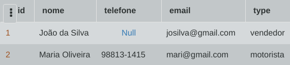
A tabela de vendedor é populada com o identificador da pessoa que representa o vendedor, mais o dado específico do vendedor: a comissão (Figura 5.3).
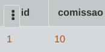
Os dados do motorista são armazenados na tabela motorista (Figura 5.4), quem contém o identificador da pessoa que atua como motorista, bem como o dados específico do motorista: o número da carteira nacional de habilitação (CNH).
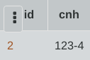
O elemento que estabelece a ligação entre a classe filha e a classe mãe é o vínculo criado entre o identificador da classe filha e o identificador da classe mãe. No caso da classe Motorista, o comando que estabelece esse vínculo é este: id = db.Column(db.Integer, db.ForeignKey(’pessoa.id’), primary_key=True). Se o atributo de identificação criado pelo comando db.Column for criado sem a cláusula db.ForeignKey, a tabela da classe filha não será criada, e as informações serão reunidas na tabela mãe (Figura 5.5).
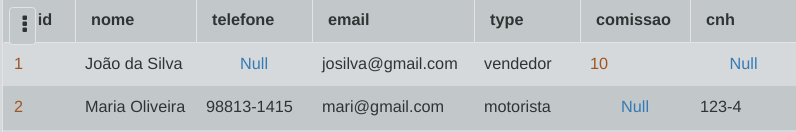
Este capítulo apresentou dois exemplos de persistência em classes, a fim de ilustrar maneiras de realizar o armazenamento de dados modelados em objetos. O próximo capítulo inicia o desenvolvimento de um sistema que realiza persistência com uso de ORM, revisitando o assunto de persistência de forma gradual e integrada com as outras partes do sistema.
Um sistema de informação web pode ser compreendido como páginas HTML que interagem com um banco de dados, de maneira que tal diálogo seja mediado por programas (Figura 6.1). Os programas lêem informações do banco de dados e as colocam nas telas; obtém informações na tela, digitadas pelo usuário, e as colocam no banco de dados. Geralmente antes dessas transições são realizados processamentos para validar dados, efetuar cálculos, etc.
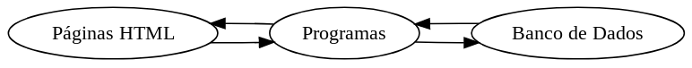
É comum que a maioria das linguagens de programação utilizadas no desenvolvimento de sistemas ofereça suporte à criação de telas, ao acesso a banco de dados (BD) e ao processamento dos dados. Assim, pode-se desenvolver sistemas de maneira integrada, de forma que esses três elementos permaneçam reunidos em um mesmo projeto, ou servidor, e sejam desenvolvidos na mesma linguagem. O desenvolvimento integrado funciona bem enquanto o sistema é pequeno, ficando mais complexo de ser desenvolvido e mantido na medida em que o sistema vai crescendo. Torna-se, portanto, vantajoso separar os componentes de tela e de dados em projetos diferentes, e quando os projetos de tela e dados são executados separadamente:
As partes de tela e de dados do sistema são conhecidas geralmente como front-end e back-end, respectivamente (Figura 6.2). O processamento do sistema é distribuído entre o front-end e o back-end, sendo comum delegar mais operações ao back-end, visto que o acesso aos dados por meio de senhas e permissões torna-se mais seguro se o programa que acessa esses dados está mais próximo (no mesmo ambiente) do servidor de banco de dados. Além disso, o processamento de dados muitas vezes possui características sigilosas que podem ser mantidas em segredo de forma mais natural estando no back-end (ou seja, distante do cliente). Processamentos realizados no cliente incluem operações mais leves e públicas, como validação de dados (verificação de CPF, campos obrigatórios, etc) e o carregamento de dados particionado (partes da tela são carregadas separadamente, em paralelo). As informações tramitadas entre os componentes do sistema são convertidas para um formato padrão de tráfego de dados em rede, para permitir que todas as tecnologias possam ser utilizadas possam interpretar essas informações. No caso, utiliza-se o formato json (JavaScript Object Notation) para trafegar os dados entre front-end e back-end.
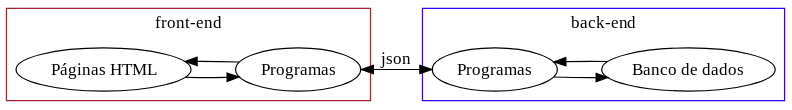
Nesta seção será construído um sistema web que manipula dados de pessoas: nome, email e telefone. Inicialmente será mostrada a versão integrada do sistema, e a seguir a versão que separa os componentes do sistema em front-end e back-end. Esse sistema possui uma classe para representar a pessoa, uma tela de listagem de pessoas (Figura 6.3) e um banco de dados para persistir os dados das pessoas.
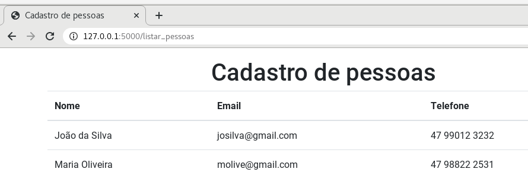
Para implementar um sistema web em python, será utilizado o Flask (TEAM, 2019), que consiste de uma biblioteca do python que é capaz de implementar um servidor web para hospedar uma aplicação em python. Flask não possui uma estrutura rígida que exige muitas configurações e especificações de organização, por isso é uma forma fácil de iniciar a programação de sistemas web. Possui, porém, recomendações de organização e estrutura, mas que não serão descritas neste material, por se tratar aqui de uma utilização mais introdutória à programação web. A aplicação exemplificada nesta seção contém as ações de manipulação de persistência de dados (back-end) tem como as ações de exibição de telas (front-end).
Iniciamos a implementação do cadastro de pessoas modelando a classe que armazena as informações da pessoa (Código 6.1). A implementação inicia importando tudo o que se encontra dentro de um arquivo de configurações (linha 1) que será detalhado depois deste código da classe que está sendo descrito. A classe Pessoa (linha 3) é implementada utilizando-se um framework de persistência chamado SQLAlchemy, que tem por objetivo facilitar o armazenamento dos dados em um banco de dados (SQLALCHEMY, 2020c). Todas as classes são formadas a partir da classe Model, por isso a classe Pessoa herda atributos e métodos dessa classe. O acesso à classe Model ocorre via variável db, que é criada no arquivo de configurações (que será descrito em breve). O primeiro atributo é um identificador interno sequencial da pessoa (linha 5), um número do tipo autoincrementado, cujo valor será atribuído pelo banco de dados. É um número inteiro, e como identifica unicamente a pessoa, é definido como chave primária. Os próximos três campos são o nome, o email e o telefone (linhas 6 a 8), sendo definidos como tipo texto (String). O tamanho do texto é informado com um valor igual a 254 para os três campos mencionados. Por fim, um método expressa uma instância da classe em formato texto (linha 11), no qual são retornados os atributos da pessoa (linhas 12 e 13).
O valor do tamanho de texto (254) poderia ser omitido: o código iria funcionar sem esse valor. Porém, é importante fornecer um tamanho do texto que se deseja armazenar, pois alguns bancos de dados podem exigir que esse tamanho seja informado, sob pena de incorrer em um erro no momento de criação das tabelas. Confira na íntegra o texto que está escrito na documentação do SQLAlchemy:
Certain databases may require a length for use in DDL, and will raise an exception when the CREATE TABLE DDL is issued if a VARCHAR with no length is included (SQLALCHEMY, 2020a).
A parte de teste da classe inicia verificando se o código principal que está sendo executado é o programa chamado “modelo.py” (Código 6.2, linha 16). Essa condição protege a execução do código quando outro programa em python importa o arquivo “modelo.py”, caso em que o programa de teste não precisaria ser executado. O teste da classe verifica se o arquivo de banco de dados existe (linha 18); em caso positivo, o arquivo é excluído (linha 19). Isso garante que caso o teste seja executado mais de uma vez, os objetos criados não sejam armazenados várias vezes repetidamente. O comando seguinte cria as tabelas do banco de dados, referente às classes que foram declaradas (linha 22). A seguir, são criadas duas instâncias da classe Pessoa (linhas 25 a 28). Note que a criação de objetos com uso do SQLAlchemy requer que os parâmetros sejam informados no formato nome = valor. Um objeto de uma classe padrão do python, sem framework, pode ser criado passando-se diretamente os valores, na ordem em que são declarados na classe, sem especificar os nomes dos atributos. Após a criação dos objetos, eles são persistidos no banco de dados, adicionando-os na sessão (linhas 31 e 32) e efetuando-se a confirmação de gravação (linha 33). Por fim, um dos objetos criados é exibido na tela (linha 36). A exibição aciona o método __str__ da classe Pessoa, que retorna as informações da pessoa em formato texto.
Um arquivo de configurações chamado config.py foi criado para ser utilizado por outros arquivos do sistema (Código 6.3), e realiza inicialmente importações das bibliotecas Flask e SQLAlchemy (linhas 2 e 3). O Flask é uma biblioteca que permite implementar um servidor web de maneira simples (TEAM, 2019). A biblioteca osé importada para prover a funcionalidade de apagar arquivos (utilizada pelo programa modelo.py). A seguir, criam-se vínculos com o Flask e com o SQLAlchemy, por meio das variáveis app e db (linhas 7 e 14, respectivamente). O banco de dados a ser utilizado será o SQLite, que fica armazenado em um único arquivo. Localiza-se primeiramente o diretório atual (linha 9), que é concatenado ao nome do arquivo pessoas.db (linha 10). Esse texto de conexão é armazenado na variável arquivobd. Outras configurações se referem a especificar para o SQLAlchemy que será utilizado o SQLite (linha 11) e solicitar que mensagens de advertência do SQLAlchemy não sejam exibidas (linha 12).
O código do servidor web inicialmente importa as configurações e as classes de modelo (Código 6.4, linhas 1 e 2). A seguir, define uma rota padrão (linha 4), que é acionada caso o servidor seja chamado sem especificar nenhuma rota. Cada rota é associada a uma função, sendo nesse caso a rota padrão associada à função chamada inicio (linha 5). Geralmente a rota padrão leva a uma página inicial, mas para manter o exemplo simples no conteúdo da rota padrão existe apenas um link para a próxima rota (linhas 6 e 7). A ação que exibe as pessoas (linha 9 para a rota e linha 10 para a função) inicia obtendo a lista de pessoas do banco de dados (linha 12). O comando query realiza uma consulta no banco de dados sobre a classe Pessoa. O método all() retorna os objetos da consulta; sem especificar critérios, obtém todas as pessoas do cadastro. O retorno da ação é o conteúdo da página HTML chamada listar_pessoas.html (linha 14). A lista de pessoas obtidas do banco de dados é fornecida para essa página HTML, que manipula a lista de pessoas usando o nome listagem, via linguagem jinja (descrita adiante). Por fim, o servidor web é iniciado (linha 16).
A página HTML que exibe as pessoas faz uso do bootstrap, possui o nome igual a listar_pessoas.html e deve estar em um diretório chamado templates. Essa página inicia seu corpo principal com um título, exibindo a funcionalidade da página (Código 6.5, linha 16). O título é centralizado e possui uma margem superior especificada (mt = margin top), para afastar um pouco o título do topo da página. Uma tabela é criada (linha 19), sendo a primeira linha definida no cabeçalho da tabela (linhas 20 a 27) com as tags <tr> (Table Row) e <th> (Table Head) (linhas 22 a 26). No corpo da tabela (linha 28), um laço de repetição escrito na linguagem Jinja percorre a lista de pessoas, informada para a página sob o nome listagem (linha 30). Para cada pessoa, é exibida uma linha da tabela (linhas 31 a 35), sendo que cada linha possui as colunas nome, email e telefone (<td>, de Table Data). Cada informação é exibida como atributo da variável p, que contém a pessoa que está sendo percorrida no laço de repetição. No Jinja é preciso fechar o laço de repetição (linha 36). Comandos de ação no Jinja usam os delimitadores {% e %}, enquanto comandos para exibição de dados usam os delimitadores {{ e }}.
Os componentes do sistema integrado serão divididos nas partes front-end e back-end conforme suas funcionalidades (Tabela 6.1). Considerando que as duas partes (front-end e back-end) serão, neste momento, codificadas em python, os componentes de classe e configuração (modelo.py e config.py) são utilizados por todos os programas, logo precisam ser acessíveis e estar presentes em todas as partes do sistema. A página HTML (listar_pessoas.html) vai ficar localizada apenas no front-end, mas precisa de um servidor web para que possa exibir a página dinamicamente, exibindo a lista de pessoas. O acesso ao banco de dados será feito por meio de um servidor web, que fornecerá a lista de pessoas. Deve haver, portanto, um servidor web no front-end e um servidor web no back-end.
| Recurso/componente | front-end | back-end |
| Classes (modelo.py) | x | x |
| configuração (config.py) | x | x |
| páginas HTML (listar_pessoas.html) | x | |
| servidor web flask: exibição da página HTML | x | |
| servidor web flask: acesso ao banco de dados | x | |
A primeira modificação será feita na classe Pessoa (modelo.py), e consiste em prover à classe a capacidade de ser expressa no formato json. Isso pode ser feito por meio de um método que retorna a classe em format json (Código 6.6, linhas 15 a 21). O método json (linha 15) é criado como um método da classe Pessoa, e por isso recebe a palavra self como parâmetro. Com uso dos caracteres de chaves, o método retorna cada atributo no formato nome:valor em forma de dicionário.
Com o novo método, torna-se fundamental adicionar ao teste da classe a execução desse novo método que retorna as informações da pessoa no format json (Código 6.7, linhas 46 e 47). Ao final do teste, exibem-se os dados da pessoa no formato json, cuja saída é a seguinte: ’id’: 2, ’nome’: ’Maria Oliveira’, ’email’: ’molive@gmail.com’, ’telefone’: ’47 98822 2531’. O formato json autêntico requer o uso de aspas duplas em vez de aspas simples. Porém, como a impressão de dados na classe de modelo é apenas para teste da classe, não há necessidade de realizar o ajuste neste momento. Na transmissão dessas informações pelo servidor web (do back-end para o front-end), entretanto, tal ajuste será necessário.
A segunda modificação será feita no servidor web (servidor.py). Para fins de melhoramento na legibilidade do sistema, esse arquivo será renomeado para servidor_backend.py, pois sua funcionalidade será levemente alterada, mas o significado dessa alteração será impactante. A alteração incide sobre o método listar_pessoas, que está associado à rota listar_pessoas (Código 6.8, linhas 9 a 16). Após obter a lista de pessoas do banco de dados (linha 12), percorrem-se as pessoas executando o método json para cada uma delas (linha 14). A interpretação do laço de repetição em uma única linha pode ser feita da seguinte forma:
|
Para cada pessoa x na estrutura pessoas, aplique o comando x.json(). Adicione o resultado dessa operação em uma lista, e ao final da repetição, retorne essa lista. |
Concluindo as alterações, modifica-se agora o arquivo de configurações config.py, que se diferencia do arquivo de configurações na versão integrada do sistema apenas pelas importações (Código 6.9). Importa-se do Flask a função jsonify (linha 2), que prepara a resposta HTTP em formato json. Ainda do Flask, remove-se a importação da função render_template, pois o back-end não exibe páginas HTML.
Uma mudança de atitude em relação ao desenvolvimento do sistema acontece neste momento: após desenvolver o serviço web que fornece a lista de pessoas em json, é possível fazer o teste desse serviço, antes de levar esses dados para as páginas web. Esse teste pode ser feito pelo menos de duas maneiras:
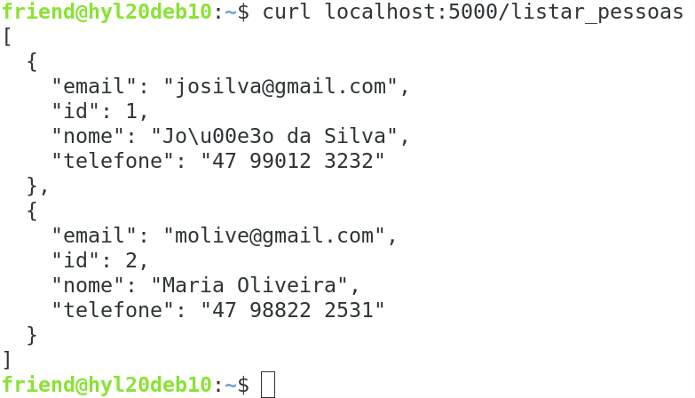

Existem ferramentas online que analisam conteúdo em formato json e podem fornecer comentários ou mesmo realizar ajustes no conteúdo. Por exemplo, o site https://jsonformatter.curiousconcept.com/ pode realizar a verificação de um conteúdo json (Figura 6.6).
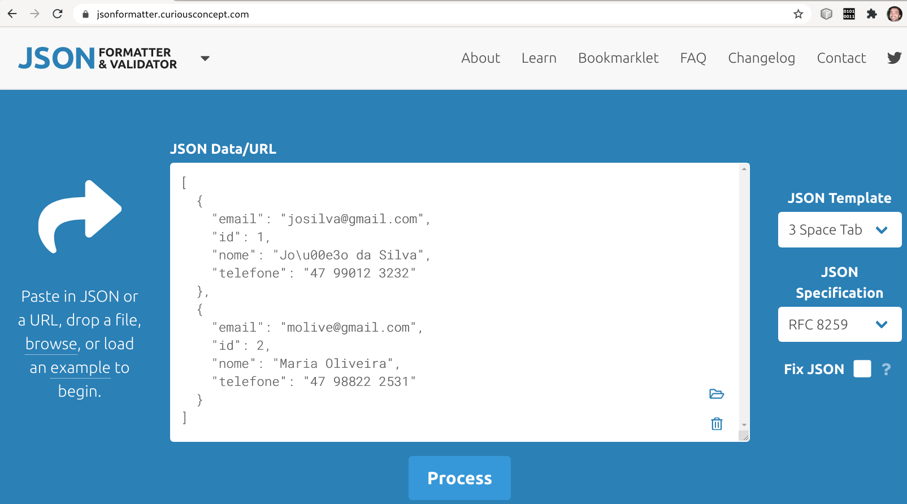
Após executar a análise do conteúdo json da operação listar_pessoas, obtém-se sucesso na validação (Figura 6.7).
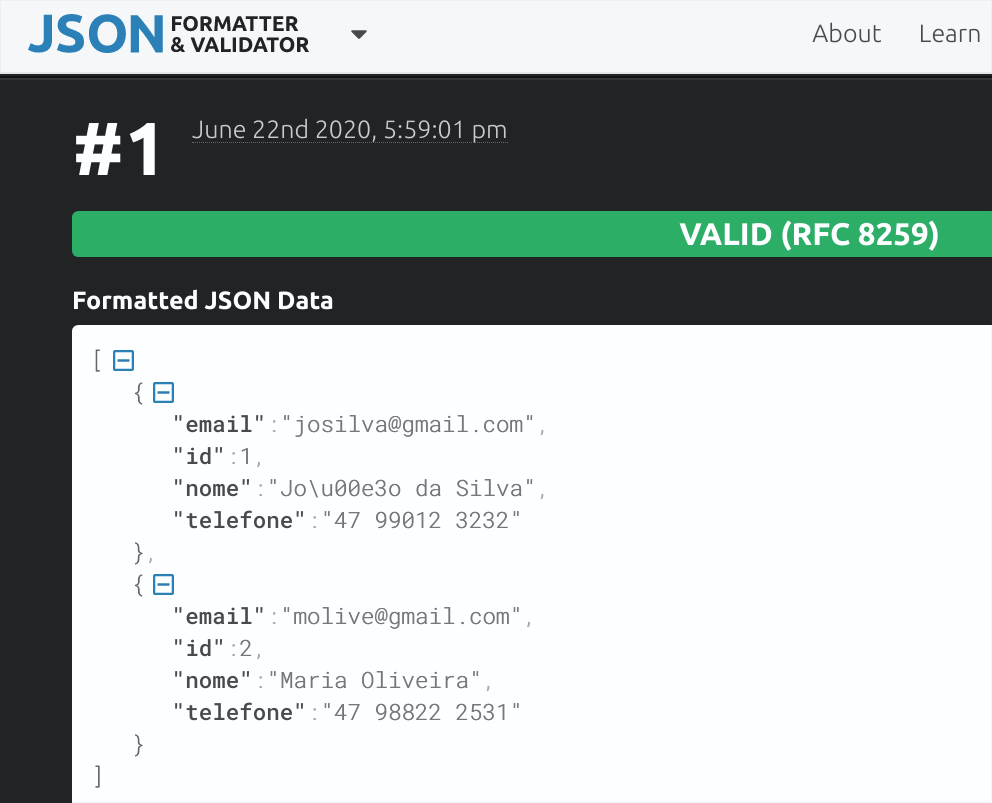
Os dados fornecidos pelo back-end serão exibidos em um formato adequado por meio da página HTML listar_pessoas.html. Como essa página é dinâmica, é necessário haver um servidor web para montar essa página com as informações das pessoas. Começamos então com o servidor web que fica no front-end: o arquivo servidor_frontend.py (Código 6.10). Esse arquivo é uma cópia do servidor back-end, com diferenças a partir da função listar_pessoas (linha 10). A primeira ação dessa função é solicitar ao back-end a lista de pessoas (linha 12). Para isso, se faz uma chamada http do tipo get à ação listar_pessoas do back-end. O resultado da ação é um conteúdo json, que deve ser convertido para o formato de uma estrutura de dados do python, no caso, uma lista (linha 14). Essa conversão é realizada pelo método json(). O próximo passo é percorrer essa lista de pessoas (linha 18) para montar uma nova lista de objetos da classe Pessoa. Essa nova lista é inicializada de forma vazia (linha 16). Cada pessoa percorrida já se encontrada em formato de dicionário, e portanto pode usado para a criação de um objeto do tipo pessoa (linha 20; saiba mais sobre dicionários na Seção 9.1.1). Essa nova pessoa é adicionada na lista de objetos do tipo Pessoa (linha 22). Por fim, a lista de pessoas é enviada para a página que exibe as pessoas (linha 25), e o conteúdo dessa página renderizada é retornado para o navegador web. Um último detalhe, mas não menos importante, é que o servidor web do front-end precisa rodar em uma porta diferente do servidor web do back-end, principalmente se ambos os servidores estiverem sendo executados em um mesmo computador, que é o caso quando está se desenvolvendo o sistema. Por isso o servidor do front-end foi designado para executar na porta 4999 (linha 27).
As próximas mudanças ocorrem no arquivo de configurações config.py (Código 6.11) e serão diferenciadas em relação ao arquivo de configurações do back-end. Primeiramente, retorna-se a importação da função render_templates que havia sido retirada na configuração do back-end, pois o front-end vai acessar páginas HTML (linha 2). Ainda na biblioteca Flask, remove-se a função jsonify, cuja função de preparar uma resposta HTTP no formato json não é mais necessária (o front-end não envia dados, por enquanto). A seguir, importa-se a biblioteca requests (linha 5), que permite a realização de requisições http. Essa função foi utilizada pelo front-end para chamar o back-end. Na sequência, remove-se a configuração de nome de arquivo do banco e dados e configura-se o SQLAlchemy para usar o SQLite apenas em memória (linha 10). Isso é assim definido porque não é preciso que o front-end realize persistência de dados, armazenando informações em um arquivo. As informações do front-end são temporárias, e por isso podem ser armazenadas somente em memória. Remove-se também a biblioteca os, que era utilizada para remover o arquivo de banco de dados no teste da classe Pessoa, caso o arquivo existisse. O front-end não manipula mais arquivo, pois realiza operações de banco de dados apenas em memória.
O arquivo que contém a classe Pessoa (modelo.py) sofre uma única modificação: a remoção das linhas que apagavam o arquivo do banco de dados, caso ele existisse. Tais linhas se encontravam no início do teste da classe Pessoa, e não fazem mais sentido, uma vez que o armazenamento de dados no front-end será feito apenas em memória, e não em arquivo. Por fim, a página listar_pessoas.html deve existir no front-end, dentro do diretório templates, e seu conteúdo é idêntico à página de mesmo nome existente no sistema integrado.
Após o estudo de caso do exemplo parcial de cadastro de pessoas (parcial porque somente lista pessoas), é possível estabelecer as diferenças entre as partes front-end e back-end em um comparativo mais detalhado (Tabela 6.2). São listados os recursos, uma breve descrição de sua utilização e em qual parte do sistema esse recurso foi utilizado (Front-end, Back-end ou ambos).
O desenvolvimento de um sistema em duas “partes” altera a rotina do desenvolvedor. Primeiramente, agora trabalha-se com dois projetos em vez de apenas um. É necessário executar os dois programas python para que o sistema funcione: o servidor_backend.py e o servidor_frontend.py, que se encontram em diretórios diferentes. Provavelmente será desenvolvido em primeiro lugar o back-end. A seguir, o back-end será executado em um terminal e inicia-se então a construção do front-end. Essa dinâmica é nova mas na atualidade os sistemas são construídos dessa forma: em partes separadas. Por isso abra sua mente e aceite esses novos conceitos. Mais do que isso, compreenda-os e pratique-os.
Este capítulo altera o front-end do sistema desenvolvido no capítulo anterior (6), trocando o front-end em python por um front-end em javascript. A linguagem python pode ser utilizada para construir o front-end, mas a linguagem que predomina nos sistemas web, no componente front-end, é o javascript. Dessa forma, o programa javascript que fica localizado no front-end se comunica com o programa python que fica localizado no back-end (Figura 7.1). Os programas presentes no front-end e back-end podem ser desenvolvidos em linguagens diferentes, sendo que a comunicação entre esses programas ocorre por meio da linguagem json.
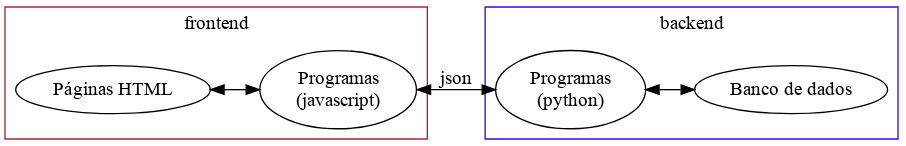
A ação mais básica de um sistema é a exibição de dados. Modificações devem ser feitas no back-end para que as informações sejam transmitidas no formato json (Seção 7.1.1). Na sequência, os recursos de inserção de dados (Seção 7.2 e exclusão de dados (Seção 7.3 também são apresentados.
O back-end em python é muito similar àquele apresentado na arquitetura na qual front-end e back-end são desenvolvidos em python (Seção 6.2.1). Uma alteração, porém, se faz necessária: o servidor web precisa incluir uma declaração que permite a qualquer cliente acessar os dados fornecidos pelo servidor (Código 7.1). Antes de ser retornada a resposta em formato json (linha 16), adiciona-se ao cabeçalho dessa resposta uma declaração de que clientes advindos de quaisquer domínios podem acessar o serviço provido pelo back-end (linha 18). O comando headers.add permite adicionar informações ao cabeçalho da resposta que será fornecida pelo servidor web.
Quando o front-end e o back-end eram desenvolvidos em python, a liberação de acesso por clientes de outros domínios não era necessária. Porém, com o front-end em javascript e o back-end em python, é preciso “liberar” o acesso entre essas partes a partir de domínios diferentes. Isso porque, por exemplo, o back-end pode rodar na porta 5000, enquanto o front-end pode rodar na porta 80. Dada essa diferença, se faz necessária a liberação do acesso do back-end conforme mencionado.
O front-end em javascript consiste basicamente na página HTML que foi utilizada na versão do front-end em python (Seção 6.2.2), com uma série de modificações, descritas a seguir.
Primeiramente, altera-se na página a referência a biblioteca jQuery, removendo a biblioteca mínima slim anteriormente utilizada pelo bootstrap (Código 7.2, linha 34) e incluindo-se a biblioteca ainda mínima, mas completa (linha 35). A seguir, adiciona-se a referência a um código script que será desenvolvido para exercer as funções do front-end (linha 39).
Como próxima alteração, modifica-se se o corpo da tabela que exibe as pessoas (Código 7.3), removendo-se o conteúdo em seu interior e adicionando um id ao componente (linha 28).
Por fim, realiza-se a codificação do programa javascript responsável por realizar a ação de buscar a lista de pessoas no back-end e inserir essas informações na página (Código 7.4). O código é executado apenas quando a página está completamente carregada (linha 1). Ao ser executado, o método ajax (linha 3) realizada uma chamada http do tipo GET (linha 5), invocando a ação listar_pessoas do back-end (linha 4). Em caso de sucesso na requisição, uma função chamada listar é executada (linha 7). Em caso de erro, um alerta será exibido ao usuário (linhas 8 a 10).
A segunda parte do programa trata-se da função listar (Código 7.5). Essa função inicia percorrendo a lista de pessoas retornada pelo back-end (linha 15). A variável i contém a posição do elemento atual. Para cada elemento (pessoa), é confeccionada uma linha da tabela HTML, contendo a tag de linha (tr) e as tags de coluna (td) (linhas 16 a 20). A pessoa atual é acessada por meio do índice i, e os campos são acessados diretamente da lista de pessoas. Após a confecção da linha, a mesma é adicionada à tabela HTML (linha 22).
A página HTML pode ser executada diretamente a partir do sistema de arquivos, clicando-se sobre a página e abrindo-a no navegador web (Figura 7.2). Perceba no começo do endereço que a página HTML foi aberta usando-se um protocolo de arquivo (file).
Requisições web são realizadas geralmente via método get. Originalmente, esse método foi projetado para executar serviços nos quais se envia pouca ou nenhuma informação, sendo que o retorno da requisição pode conter pequena ou grande quantidade de informações. Em outras palavras, o método get NÃO foi projetado para o envio de informações em grande quantidade. Portanto, em situações como o envio de dados ou mesmo o envio de um arquivo (upload) é comum utilizar o método de submissão de dados denominado post.
Como exemplo será utilizada a operação incluir_pessoa (Código 7.6, linha 22). Essa rota pode ser chamada apenas via método post, sendo essa declaração realizada por meio da palavra-chave methods. A primeira ação do método consiste em preparar uma resposta a ser fornecida caso a operação seja bem sucedida (linha 25). A resposta é criada no formado json com os campos resultado e detalhes iguais a “ok”. O comando jsonifyé usado para tornar possível definir na resposta o cabeçalho adicional de liberação de origem do cliente (linha 39). Na sequência, os dados enviados para a ação são recebidos pelo comando request.get_json (linha 27). Tenta-se, a seguir, criar uma pessoa com os dados informados (linha 29) e adicionar a pessoa no BD (linhas 30 e 31). Em caso de sucesso, a resposta “ok” será fornecida a quem chamou o método; caso contrário, será retornado um erro contendo a mensagem que ocasiou o problema (linha 34).
Ao executar o programa back-end, pode-se utilizar o comando curl no terminal do linux para testar o funcionamento da ação (Listagem 7.7). Ao efetuar a chamada do método usando os parâmetros corretos (linha 1), o resultado é executado de acordo com o esperado (linhas 2 a 5). Como exemplo de erro, foi informado o nome do atributo “nome” de maneira incorreta (linha 6). O resultado é a mensagem de erro dizendo que “nomeX” não é um campo da classe Pessoa (linha 8). Outro possível erro é quando não se explicita o tipo de conteúdo que está sendo enviado (linha 11: faltou informar que o conteúdo enviado é do tipo json). O resultado é que o back-end não vai conseguir ler os dados no formato json, e os parâmetros enviados para a criação do objeto Pessoa conterão o valor nulo; consequentemente, dados nulos (do tipo NoneType, no python) não podem ser usados para fornecer as informações de uma pessoa (linha 13).
Algumas vezes uma aplicação dividida em front-end e back-end está sendo executada de forma que essas partes se encontram em locais diferentes, ou domínios diferentes, e uma parte precisa enviar dados para outra parte. Nessas situações ocorre uma interação conhecida como compartilhamento de recursos de origem cruzada (Cross-domain resource sharing - CORS). Esses cenários exigem que a parte que recebe dados seja devidamente configurada para que a mesma possa tratar as requisições oriundas do domínio externo (diferente do domínio no qual se encontra a parte).
Um dos cenários onde ocorre o CORS é o recebimento de dados via POST por aplicações de outro domínio. Por exemplo, um front-end javascript solicitando recursos de um back-end python. Anteriormente foi desenvolvido um back-end que forneceu dados para um front-end javascript (Seção 7.1.1). Na ocasião, foi adicionado ao cabeçalho uma informação para liberar a resposta a qualquer origem que invocar o back-end (Código 7.1, linha 18). Para requisições do tipo GET, tal alteração foi suficiente. Porém, para requisições do tipo POST, uma nova modificação se torna necessária no back-end para que o cenário de CORS funcione corretamente no seguinte cenário específico: front-end em javascript utilizando jQuery enviando dados em json para um back-end em python. Nesse caso, é preciso informar que os dados enviados se encontram no formato json. Observe o que ocorre quando o front-end em javascript informa que os dados serão enviados em json:
For cross-domain requests, setting the content type to anything other than application/x-www-form-urlencoded, multipart/form-data, or text/plain will trigger the browser to send a preflight OPTIONS request to the server (FOUNDATION, 2020).
Dessa forma, o back-end python vai receber requisições do tipo OPTIONS em vez de requisições do tipo POST. O ajuste no back-end adapta a requisição, convertendo-a de OPTIONS para POST. A observar o registro de pedidos no back-end (Listagem 7.8), mediante uma requisição javascript em domínio diferente do back-end, ocorre uma requisição OPTIONS seguida por uma requisição POST. A segunda requisição é originada a partir do teste via curl. Essa requisição é mantida via método POST .
É preciso tornar o back-end apto a realizar a conversão de requisições OPTIONS para requisições POST. Esse recurso pode ser realizado com uso de uma biblioteca do python chamada flask_cors (Código 7.9, linha 5). A seguir, aplica-se o comando CORSà variavel app (linha 9), que é a referência ao Flask no programa.
As próximas seções detalham o front-end, composto basicamente pela página HTML (Seção 7.2.2) e pelo programa javascript que modifica dinamicamente o conteúdo dessa página (Seção 7.2.2.1).
O primeiro componente do front-end a ser descrito é a página HTML de nome igual a pessoas.html, que apresenta o sistema (Figura 7.3).
A primeira parte da página contém uma barra de navegação que possui um ícone para representar a aplicação (Código 7.10, linha 19). Na sequência, encontra-se uma frase que traz o nome do sistema (linha 23) e os três links de início, listar e incluir (linhas 24 a 28).
Quando a tela é dimensionada para um certo tamanho pequeno, os links são agregados em um menu e apenas um botão é exibido (Figura 7.4). Esse botão que mostra ou esconde o menu está definido dentro da barra de navegação (Código 7.11, linhas 32 a 35).
O conteúdo principal da página é dinâmico e está abrigado sob uma div identificada como corpoDaPagina (Código 7.12, linha 39). Todos os conteúdos que são exibidos nessa div se encontram inicialmente invisíveis: primeiramente, o conteúdo inicial (linhas 41 a 43). Em breve veremos que um código javascript torna visível cada parte da página conforme a necessidade.
O próximo código desta página abriga um formulário de inclusão de pessoa (Figura 7.5). Esse formulário é aberto assim que o link Incluir é acionado. O formulário é um componente modal, o que significa que quando o formulário é aberto não é possível realizar operações na janela que se encontra “atrás” do formulário.
O formulário é identificado como modalIncluirPessoa (Código 7.13, linha 46). A classe modal fornece ao componente o comportamento de manter a janela anterior ao formulário desabilitada, enquanto o cadastro da nova pessoa é feito. Dentro outros comandos se encontra o título da janela (linha 51) e o ícone com um pequeno “x” no canto superior direito, que pode fechar a janela ao ser clicado.
A próxima parte do formulário contém os campos de entrada de dados (Código 7.14, linhas 56 a 79). O corpo do formulário (linha 56) contém um componente de formulário HTML (linha 57), que por sua vez contém três campos de entrada. Para cada campo existe uma div (linha 58) que agrega o campo de entrada com outros componentes: um rótulo para o campo (linha 59), o campo de entrada (linhas 60 e 61) e um pequeno texto de ajuda para o preenchimento do campo (linhas 62 e 63).
O formulário termina com os botões de cancelamento da operação ou a confirmação da inclusão (Código 7.15). O botão de inclusão (linha 83) está associado ao identificador btIncluirPessoa: esse identificador será vinculado a um código javascript, que vai realizar efetivamente a inclusão da pessoa no sistema.
O próximo conteúdo desta página é uma tabela que listagem de pessoas (Código 7.16). Essa tabela é identificada como tabelaPessoas (linha 90) para que possa ser ocultada ou exibida via código javascript, quando o link Listar é acionado (exibir a tabela) ou quando outros links são acionados (ocultar a tabela). O cabeçalho da tabela é fixo (linhas 91 a 98), enquanto o corpo da tabela é identificado como corpoTabelaPessoas (linha 99) e seu conteúdo é modificado via javascript, inserindo linhas na tabela com os dados das pessoas, quando o link Listar é acionado.
A página termina com a inclusão de códigos javascript utilizados na página (Código 7.17). Primeiramente, se inclui a biblioteca jQuery (linha 108); a seguir, uma biblioteca denominada popper (linhas 109 a 111); na sequência, o framework bootstrap (linhas 112 a 114). Por fim, o código javascript específico que manipula a página é incluído (linha 116): esse programa foi chamado de meuscript.js, e se encontra dentro da pasta js.
A página HTML é modificada dinamicamente de acordo com as ações solicitadas pelo usuário. Isso é realizado por meio de comandos javascript (Código 7.18). A primeira função detalhada a seguir é a função exibir_pessoas (linha 4). Essa função realiza uma chamada ao back-end, por meio do comando ajax (linha 5). O endereço do back-end contém a ação listar_pessoas (linha 6), a requisição é do tipo GET (linha 7), o tipo de dados recebido após a execução é do tipo json (linha 8) e o código a ser executado após a requisição é definido na função listar (linha 9), em caso de sucesso da chamada. Em caso de erro, um alerta é emitido para o usuário (linhas 10 a 12).
A função que lista pessoas recebe como parâmetro a resposta da requisição http (Código 7.19, linha 14). A primeira ação da listagem de pessoas é esvaziar o corpo da tabela (linha 16), que será posteriormente preenchido novamente. Pode-se, a seguir, invocar uma função (detalhada mais adiante) que torna a tabela de pessoas visível (linha 18). Na sequência, percorrem-se as pessoas a serem exibidas (linha 18) e, para cada pessoa, monta-se uma linha da tabela (linhas 20 a 25). Cada nova linha é, então, adicionada ao corpo da tabela existente na página (linha 27).
A função mostrar_conteudo recebe um identificador, que define qual parte da página será exibida (Código 7.20, linha 33). Duas ações são realizadas nessa função: esconder todas as seções da página (linhas 35 a 36) e tornar visível a seção desejada (linha 38).
O próximo trecho de código associa os links de listar e início a ações específicas, no caso do evento de clique nos links (Código 7.21). Um clique sobre o link “Listar” (linha 42) dispara a função exibir_pessoas (linha 43), enquanto um clique no link “Início” (linha 47) executa a função que torna visível o conteúdo inicial da página (linha 48).
A janela de inclusão de pessoas possui um botão que confirma a operação de inclusão. Esse botão é associado a um evento de clique, para que as devidas ações possam ser tomadas quando o botão for clicado (Código 7.22). As ações basicamente consistem em obter os valores digitados na tela de inclusão (linhas 54 a 56), preparar os dados a serem enviados na ação de cadastro (linha 58) e executar a requisição http (linha 60). Na requisição é definido: o nome da ação a ser chamada no back-end (ação incluir_pessoa, linha 61), o método de envio (POST, linha 62), o tipo de dados recebido como resposta (linha 63), o tipo de dado que está sendo enviado (no caso, os dados da nova pessoa; linha 64), os dados que estão sendo enviados (linha 65), as ações a serem executadas em caso de sucesso da requisição (linha 66) ou em caso de erro (linha 67).
As funções que realizam as ações de sucesso e erro da requisição atuam sobre o resultado da requisição (Código 7.23). A função que inclui a pessoa exibe uma mensagem sobre o sucesso da operação (linha 72), limpando os valores dos campos a seguir (linhas 74 a 76). Em caso de algum possível erro notificado pelo back-end, a mensagem de erro é exibida ao usuário (linha 79). A função de exibir erro de requisição informa o erro a usuário (linha 84), com base na mensagem de erro gerada pelo comando ajax.
O restante do código javascript consiste em, primeiramente, definir a ação que vai ser executada quando a janela de inclusão de pessoas for fechada (Código 7.24, linha 89). Se a tabela de pessoas estiver visível (linha 91), atualiza-se a lista de pessoas exibidas (linha 93), considerando que possivelmente foi incluída uma nova pessoa no cadastro. Antes de concluir o código, é executada a função que mostra conteúdos, definindo-se como parâmetro o conteúdo inicial da página (linha 98).
A remoção de dados em um sistema web pode ser realizada por meio de requisições do tipo DELETE. Para essa ação será utilizado o protocolo no formato REST.
A rota de exclusão de uma pessoa inicia com o nome da rota (Código 7.25, linha 40). Para a rota excluir, porém, será utilizado um padrão denominado REST para informar o parâmetro: qual o identificador da pessoa que será excluída. Esse parâmetro é um número inteiro (especificado pela palavra int), cujo valor será mapeado por um nome denominado pessoa_id. O método da requisição HTTP utilizado para esta rota é o método DELETE. Na função que executa os passos da exclusão (linha 41), o identificador da pessoa é capturado sob o mesmo nome informado na rota: pessoa_id. A primeira ação da rota é preparar uma resposta padrão otimista (linha 43). A seguir, executa-se a exclusão da pessoa cujo identificador é igual àquele passado como paâmetro (linha 46). Na linha seguinte, a operação é confirmada no banco de dados (linha 48). Caso ocorra algum erro, uma resposta que apresenta os detalhes do erro é preparada (linha 51). Por fim, libera-se a resposta da ação para quaisquer origens que estejam acionando o serviço de exclusão (linha 53), e retorna-se a resposta (linha 54).
A realização do teste dessa rota consiste na chamada da rota passando o código de pessoa a ser excluída após o nome da rota, usando como delimitador a barra normal (Código 7.26, linha 57). É preciso também especificar que o método de requisição utilizado será do tipo DELETE. A execução bem sucedida da rota resulta na resposta padrão da rota, com valores “ok”.
A primeira ação para levar a operação de exclusão de dados ao front-end é disponibilizar uma nova coluna na tabela que lista as pessoas (Figura 7.6). A nova coluna é preenchida com um link que contém uma imagem; o clique nesse link realiza a ação de excluir a pessoa.
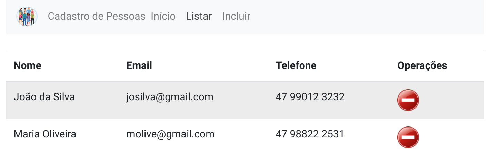
A nova coluna surge com a inserção, na página HTML, da tag th (Código 7.27, linha 97). Umas das operações que pode ser realizada sobre a pessoa é a exclusão.
A próxima ação é fazer com que essa coluna seja preenchida para cada pessoa que for listada na página. Assim, a função javascript listar que exibe as pessoas será modificada para incluir as informações dessa nova coluna (Código 7.28). No trecho de código que percorre as pessoas obtidas do back-end, a nova linha que é montada a cada repetição agora será adicionar da coluna de operações (linhas 25 a 28). O link que permite realizar a exclusão da pessoa é criado com um identificador igual ao texto “excluir_” concatenado com o identificador da pessoa (linha 25). O link é acionado por meio da classe excluir_pessoa (linha 26), cujo comportamento será descrito em breve. A imagem do link apresenta o ícone de exclusão da pessoa (linhas 26 e 27). Outra modificação importante é a identificação de cada linha que exibe os dados das pessoas (linha 21). Cada linha é identificada com o nome “linha_” concatenado com o identificador da pessoa.
A ação de excluir é associada à classe denominada “excluir_pessoa” (Código 7.29, linha 105). Os procedimentos para realizar a exclusão iniciam obtendo o identificador do link que foi clicado (linha 107). A seguir, armazena-se a string “excluir_” em uma variável (linha 109), para que se possa obter dessa variável de forma “automática” o tamanho da string (no caso, será igual a 8) por meio do método length (linha 110). Obtém-se,então, a substring que está após a posição 8 do nome do componente. Todo link de excluir é formado com a string “excluir_” mais o identificador da pessoa. Assim, no comando substring obtém-se o identificador da pessoa (pois é a parte que se encontra após o texto “excluir_”). De posse do identificador da pessoa, realiza-se a chamada HTTP ao back-end (linhas 112 a 118). A ação invocada é a rota excluir_pessoa (linha 113), passando-se para a rota o identificador da pessoa. O tipo dessa requisição é DELETE (linha 114), o que torna necessária a manipulação CORS (Cross Origin Request Source) que foi manipulada quando implementamos o método POST (portanto, está ok no backend). Após a exclusão da pessoa, espera-se que a resposta do backend venha no formato json (linha 115). Quando a operação é realizada com sucesso, a função pessoaExcluida é chamada (linha 116); caso contrário, uma função de erro é invocada (linha 117).
As funções de resposta ao link para os casos de sucesso ou erro estão descritas a seguir (Código 7.30). Para o caso de sucesso da requisição (linha 119), se o resultado retornado pelo backend estiver correto (linha 120), a linha da tabela na qual os dados da pessoa são exibidos é ocultada (linha 122), por meio do método fadeOut. A linha é localizada por meio do termo “linha_” concatenado com o identificador da pessoa. Após a remoção da linha da tabela, é exibida uma mensagem informando sobre o sucesso da operação (linha 124). Esse comando deve ficar dentro de uma função vinculada ao comando fadeOut para que o alerta seja emitido apenas quando a linha da tabela desaparecer por completo da tela, o que demora um segundo, devido ao parâmetro 1000 do comando fadeOut (1000 milisegundos). Caso o resultado informado pelo backend não esteja correto (linha 126), uma mensagem é exibida ao usuário para notificá-lo sobre o erro (linha 128). A requisição pode não alcançar o backend por diversos motivos (por exemplo, problemas na rede). Se isso ocorrer, uma mensagem será exibida ao usuário (linha 133).
Este capítulo descreve a ampliação do sistema, com acréscimo de mais classes relacionadas. São considerados relacionamentos de um-para-vários e de vários-para-vários. Aborda-se também a inclusão de dados em classes compostas.
As operações de exibição e manipulação de dados tem sido desenvolvidas sobre a classe Pessoa, que contém os campos nome, telefone e email. Porém, torna-se necessário ampliar o sistema, pois nos sistemas reais, as informações são divididas em mais de uma entidade. Como exemplo, vamos considerar uma instituição de saúde que realiza exames e que possui alguns respiradores (Figura 8.1). Muitas vezes as informações para a análise e projeto de um sistema estão disponíveis em anotações rústicas. Quando uma pessoa realiza exames, o resultado dos exames é entregue para a pessoa em uma espécie de ficha, contendo os dados da pessoa no cabeçalho, e listando um resultado de exame em cada linha. Um resultado de exame contém a data do resultado, o nome do exame e o resultado contendo valor e unidade. A instituição de saúde possui alguns respiradores, que possuem um código e uma data de aquisição. Um respirador pode estar emprestado para uma pessoa, registrando nesse caso o nome da pessoa e a data do empréstimo.
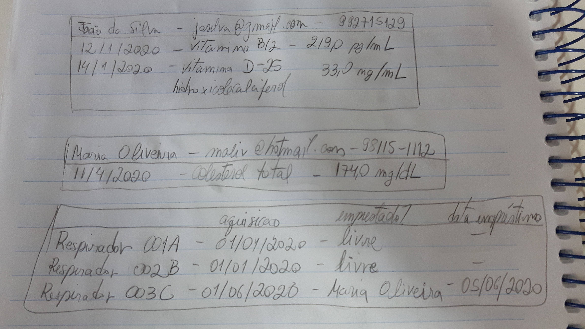
A classe Pessoa desenvolvida anteriormente (Código 6.6) será utilizada para modelar as informações desse sistema. Observando as informações do sistema, surgem questões que orientam a modelagem de classes:
Outras perguntas podem também surgir, de maneira que, após análise, discussões e ponderações, algumas afirmações podem ser obtidas:
Observa-se, assim, duas relações principais: entre o resultado de exame e a pessoa que fez o exame, e entre o respirador e uma pessoa. O resultado de um exame não pode existir sem haver uma pessoa vinculada. Assim, pode-se definir uma relação de forte associação, uma dependência denominada composição: a pessoa “faz parte” do resultado do exame, o qual não pode existir (o exame) sem haver uma pessoa vinculada. Já no caso do respirador, esse equipamento pode estar ou não emprestado com uma pessoa. Porém, o respirador pode não estar emprestado, ou seja, a existência do respirador não está condicionada ao vínculo com uma pessoa (o respirador “existe” sem uma pessoa). Assim, a relação entre um respirador e uma pessoa é denominada agregação: o respirador pode “conter” uma pessoa, mas não depende dela para existir (o respirador). As informações desse sistema podem ser, então, modeladas em três classes denominadas Pessoa, ExameRealizado e Respirador (Figura 8.2). A relação entre Pessoa e ExameRealizado é uma composição, e está representada por uma linha contínua, a qual possui um losango preenchido na classe que representa o “todo”, enquanto a classe na outra ponta da linha representa a “parte”. As classes Respirador e Pessoa possuem uma relação de agregação: uma linha que contém o losango sem preenchimento, localizado próximo à classe que representa o “todo”.
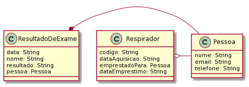
A implementação da classe ExameRealizado contém as informações básicas do exame: data, nome e resultado (Código 8.1, linhas 25 a 27). Há também um identificador interno autoincrementado, para tornar o objeto único (linha 24). A seguir, são declarados dois atributos que serão utilizados para estabelecer a ligação da classe ExameRealizado com a classe Pessoa (linhas 30 e 32). O primeiro atributo é o identificador da pessoa (linha 30), que faz a ligação com a classe Pessoa por meio do identificador da pessoa (Pessoa.id) por meio do comando ForeignKey. O parâmetro nullableé definido como False, o que requer a existência de uma pessoa no exame realizado. Essa definição torna a relação entre o exame realizado e a pessoa uma composição. O segundo atributo permite que as informações da pessoa que fez o exame (que estão armazenadas em um objeto do tipo Pessoa) seja acessível por meio do atributo pessoa (linha 32). O método relationship torna possível esse acesso.
Outros métodos úteis são definidos na classe: o método __str__ expressa a classe em formato textual (Código 8.2, linhas 34 a 36). O método json é utilizado para expressar a classe em formato json (linhas 38 a 46). As informações do exame realizado incluem todas as informações de uma pessoa, por acionamento do método json no objeto pessoa (linha 45).
A classe Respirador é implementada com os campos que armazenam as informações próprias do respirador: o código e a data de aquisição (Código 8.3, linhas 50 e 51), além da data de empréstimo (linha 52), que possui um valor quando o respirador está emprestado. Para estabelecer o vínculo entre uma pessoa e o respirador, é criado um atributo para receber o identificador da pessoa (linha 55), com uso do método ForeignKey. A cláusula nullable não é definida nesse comando, o que torna opcional a existência de uma pessoa associada ao respirador. Com isso, a relação entre a pessoa e o respirador se define como uma agregação. O acesso aos dados da pessoa é feito por meio do atributo pessoa, definido no relacionamento com a classe Pessoa (linha 57).
Os métodos auxiliares estão definidos para expressar a classe em forma textual (Código 8.4, linha 59) e em forma json (linha 65). No método __str__, é verificado se o respirador está emprestado para alguém (linha 61). Em caso positivo, a informação do empréstimo é adicionada ao retorno do método. No método json, se o respirador estiver livre (linha 66), os campos referentes à pessoa são definidos com valores vazios (linhas 67 a 69). Caso contrário, as informações da pessoa são associadas às informações da pessoa que serão transformadas em json (linhas 71 a 73). Os dados da pessoa são resgatados com uso do método json disponível no objeto pessoa (linha 72). Por fim, as informações selecionadas são retornadas (linhas 75 a 82).
O teste das novas classes consiste, primeiramente, na criação de um exame realizado, associado a uma pessoa criada anteriormente (Código 8.5, linhas 107 e 108). A seguir, exibem-se as informações do exame, que inclui a apresentação das informações da pessoa (linhas 111 e 112). O resultado exibe informações do exame e da pessoa relacionada (linha 114). Em formato json, as informações incluem um campo “pessoa” que contém “toda a pessoa” em formato json (linha 115).
A criação de um respirador que está disponível consiste apenas em informar o código e a data de aquisição do respirador (Código 8.6, linha 118). A exibição das informações do respirador demonstra, assim, apenas essas duas informações (linha 124). Informações do respirador no formato json incluem dados do respirador apenas, e sinalizam que não existe pessoa associada àquele respirador (linha 125).
Um segundo respirador é criado, desta vez associado a uma pessoa (Código 8.7, linha 128). Na exibição do respirador em formato textual, mencionam-se dados do respirador e da pessoa (linha 134). No formato json, os dados da pessoa são exibidos integralmente, em um campo denominado “pessoa” (linha 135). O conteúdo json, se formatado e ajustado (por exemplo, troca de aspas simples por aspas duplas) resulta em um conteúdo json padronizado (linhas 138 a 150). O exemplo foi formatado e validado no site https://jsonformatter.curiousconcept.com.
Quando duas classes se relacionam de maneira que a combinação de ambas as classes pode ocorrer mais de uma vez, existe um relacionamento denominado vários-para-vários, ou N x N. Vamos modificar o exemplo anterior dos exames realizados (Seção 8.1.1) para elevar o exame a uma entidade, em vez de apenas citar o nome do exame no registro do exame realizado. A nova classe Exame agora vai também conter, além do nome do exame, a unidade sob a qual o resultado do exame é submetida e o valor de referência que localiza o resultado do exame em relação a um valor de referência (Figura 8.3). Como um resultado de exame não existe sem exame ou sem pessoa, as relações com essas entidades são composições.
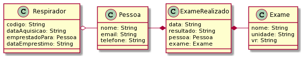
A nova classe chamada Exame possui os atributos nome, unidade e valor de referência (Código 8.8, linhas 25 a 27). Os métodos de expressão textual da classe e expressão em formato json também são definidos (linhas 28 a 36).
A partir da criação da classe Exame, a classe ExameRealizado é modificada (Código 8.9). Além dos campos básicos (linhas 39 a 41) e dos campos que identificam a pessoa (linhas 44 e 45), acrescentam-se os campos de identificação do exame (linhas 47 e 48). O campo exame_id (linha 47) faz o vínculo do exame com o exame realizado. Já o campo exame (linha 48) permite acesso aos dados do exame, como o nome do exame ou a unidade de medição do exame.
Fonte: https://github.com/hvescovi/programar2020/blob/master/
03-front-e-back/06-front-e-back-n-para-n-python/back-end/modelo.py#L38
Os métodos adicionais da classe permitem expressar a classe de forma textual e no formato json (Código 8.10). No método __str__ (linha 50), são exibidos os campos do exame realizado (linha 51), bem como os dados da pessoa e do exame (linha 52). Para os campos pessoa o exame, o método __str__ dessas classes é acionado automaticamente, visto que esses atributos se encontram dentro de uma string. O método json exibe os atributo do exame realizado, bem como invoca os métodos json dos objetos pessoa e exame (linhas 60 e 62, respectivamente).
O teste da classes agora requer a criação de exames (Código 8.11). Os exames são criados com os campos nome, unidade e valor de referência (linhas 120 a 122). O resultado de um exame é instanciado com os dados do resultado, a pessoa e o exame (linhas 124 e 125).
A exibição de um exame no formato json inclui a exibição da pessoa e do exame referentes ao resultado (Código 8.12). Uma visualização formatada do resultado json exibe as informações do resultado do exame (linhas 137 e 138), o vínculo do resultado do exame com a pessoa (linha 139) e os dados completos da pessoa vinculada (linhas 140 a 145). Da mesma forma, o conteúdo json abriga o código do exame relacionado (linha 146) e os dados completos desse exame (linhas 147 a 152).
Vamos adicionar ao backend a capacidade de responder, em formato json, os dados das classes compostas via web. Para isso, o backend utilizado para listar as pessoas será extendido. A primeira ação é realizar a importação das demais classes que foram desenvolvidas: Exame, ExameRealizado e Respirador (Código 8.13).
A próxima ação consiste em criar a rota que vai listar os exames realizados (Código 8.14). A rota é muito similar à rota que lista pessoas: inicia com a especificação do nome da rota (linha 64), seguida pela definição da função que abriga o processamento para a obtenção da lista de dados (linha 67). Os dados são obtidos da base de dados (linha 69) e convertidos de objetos para json (linha 71), por meio da invocação do método json de cada objeto da lista. A seguir, a lista em python é convertida para um objeto do tipo Response, com os dados no formato json (linha 73). Adiciona-se à resposta um cabeçalho que permita um cliente de outro domínio invocar os dados fornecidos pelo backend (linha 75). A resposta é, por fim, retornada (linha 76).
A execução da rota que lista os exames realizados informa, no exemplo, um resultado de exame (Código 8.15). Os dados do resultado consistem na data do exame (linha 81) e no resultado (linha 97). Os dados do exame e da pessoa que fez o exame também são retornados (linhas 82 a 88, e 90 a 96).
É preciso também criar as rotas para listar os respiradores e os exames. Porém, desta vez vamos tentar especificar uma rota genérica que possa listar dados de qualquer classe que seja informada como parâmetro (Código 8.16). A rota inicia com uma declaração que permite informar o nome de um parâmetro chamado classe, sendo esse dado do tipo string (linha 102). O parâmetro é informado no formato REST. Esse parâmetro é recebido pela função associada à rota com o mesmo nome do parâmetro: classe (linha 104). Uma variável para receber os dados é inicializada com o valor nulo (linha 106), e a seguir um conjunto de condições é apresentada para avaliar qual será a classe cujos dados serão consultados (linhas 107 a 114), conforme o nome da classe informada como parâmetro. Após a seleção dos dados estar disponível, convertem-se os objetos para o formato json (linha 116), prepara-se a resposta em formato json (linha 118) e adiciona-se o cabeçalho de liberação da resposta para origens diferentes (linha 120).
A execução da rota genérica apresenta os resultados conforme a classe especificada. Por exemplo, para a classe ExameRealizado, a lista de dados é obtida conforme esperado (Código 8.17). O resultado exibido é idêntico ao resultado fornecido pela rota anteriormente definida (listar_exames_realizados).
Agora o front-end que exibia a listagem de pessoas será modificado para estar preparado para a exibição dos demais cadastros. Primeiramente, altera-se o nome da página principal de pessoas.html para saude.html. Isso se deve ao fato de que essa página vai exibir diversas informações, e não mais apenas informações de pessoas (Figura 8.4). Como um resultado de exame não existe sem exame ou sem pessoa, as relações com essas entidades são composições.
No código da página, vamos alterar o texto do front-end para refletir o novo sistema, mais amplo: agora é um sistema de saúde, e não mais apenas um cadastro de pessoas (Código 8.18, linha 23). Essa alteração ocorre no texto que está aplicado sob a classe navbar-text.
A próxima alteração envolve a agregação de três cadastros sob uma lista dropdown (Código 8.19, linha 28). Primeiramente, existe o link (linha 29) que abre ou fecha (expande ou oculta) a lista de subopções. A seguir, encontram-se os links dos cadastros (linhas 35 a 37). Apenas o link de cadastro de pessoas está operacional neste momento, por isso apenas esse link possui um identificador (linha 35), que é acionado por código javascript.
A lista de exames realizados é exibida a partir de um link que existe no menu principal (Código 8.20, linha 41). O link possui um identificador, que torna o acionamento do link possível por meio de código javascript.
A página de cadastro de pessoas é exibida após o acionamento do submenu “Pessoas”, disponível no menu “Cadastros”. Essa página exibe um subtítulo, um botão para abrir o formulário de inclusão de pessoas e a tabela que lista as pessoas (Figura 8.5). Como um resultado de exame não existe sem exame ou sem pessoa, as relações com essas entidades são composições.
Em nível de código, todo o conteúdo do cadastro de pessoas se encontra em um container, identificado como cadastroPessoas (Código 8.21, linha 103). Esse container abriga o título da página (linha 104), o link que abre o formulário de inclusão de pessoas (linhas 107 e 108) e a tabela que exibe as pessoas (linha 110 a 124). A classe invisible foi removida da tabela (linha 111), pois a exibição ou a ocultação de informações agora atua no container (linha 103), e não mais apenas na tabela.
O código javascript que atuava sobre a tabela agora atua sobre o container, de maneira que são alteradas três partes do código anterior, a fim de exibir ou ocultar o container de cadastro de pessoas, em vez de apenas exibir ou ocultar a tabela que lista os dados. Primeiramente, o container a ser tornado visível é utilizado na função que exibe conteúdos (Código 8.22, linha 18). A referência anterior era sobre a tabela (tabelaPessoas), mas agora faz referência ao conteúdo de cadastro de pessoas (cadastroPessoas). A tabela continua com o identificador anterior, para permitir o acréscimo de linhas, na exibição das pessoas.
A seguir, são adicionadas classes que tornam os elementos invisíveis (Código 8.23), linhas 39 e 40). O identificador do container do cadastro de pessoas é utilizado (linha 39), bem como o identificador do conteúdo inicial (linha 40) e um outro identificador de um container que abriga o cadastro de exames realizados (linha 41). Note que a classe d-noneé utilizada (https://getbootstrap.com/docs/4.1/utilities/display/), em substituição à classe anterior denominada invisible (https://getbootstrap.com/docs/4.1/utilities/visibility/). O motivo é que a classe invisible apenas torna os elementos invisíveis, mas mantém presente na tela o espaço utilizado por esses elementos oculto. Já a classe d-none não ocupa esse espaço, quando o elemento está oculto.
Por fim, a função que verifica se houve alterações na listagem de pessoas, após a utilização da página que inclui pessoas, também é modificada (Código 8.24). O elemento cuja visibilidade é verificada é um container que abriga o cadastro de pessoas (linha 96), e possui identificador igual a cadastroPessoas. A visibilidade é verificada com a constatação da aplicação ou não da classe d-none.
A função que exibe os dados de um exame realizado possui uma característica especial: o acesso a dados que advém de outros objetos, compostos nesse primeiro (Código 8.25). Um resultado de exame “contém” informações da pessoa que realizou o exame, e detalhes sobre o tipo de exame realizado. Para exibir dados do exame realizado, realiza-se o acesso direto aos atributos do resultado do exame (linhas 160 e 161). Para exibir os dados da pessoa que realizou o exame, deve-se acessar o atributo do objeto que está inserido no resultado do exame. Por exemplo, o nome da pessoa é acessado por meio do atributo nome, que pertence à pessoa, que se encontra no resultado do exame (linha 163). Essa forma de acesso é estabelecida pelo javascript, quando se determina que os dados serão recebidos no formato json (linha 146 do código: dataType:’json’, na chamada ajax que aciona o back-end). Da mesma forma, o nome do exame realizado é acessado por meio do campo nome, do objeto javascript exame, que está disponível no exame realizado (linha 167).
Outras modificações são realizadas para operacionalizar o cadastro de exames realizados: na página HTML, o container cadastroPessoasé duplicado e renomeado para cadastroExamesRealizados, sendo feitas as devidas alterações que materializam o cadastro de exames realizados. No código javascript, a função exibir_pessoas é duplicada e renomeada para exibir_exames_realizados, sendo feitas as alterações para inserir os dados dos exames realizados na tabela que exibe os exames realizados. O link que lista as pessoas também é duplicado e modificado, para tornar disponível o link de acesso ao cadastro de exames realizados.
Nota-se, de forma similar às modificações que foram feitas no back-end, que trechos de códigos parecidos remetem à uma possível generalização. Por exemplo, as funções listar_pessoas e listar_exames_realizados são muito parecidas. Será possível realizar uma generalização, criando uma função que receba as partes diferentes dessas duas funções como um parâmetro? Esse tipo de generalização é a origem dos frameworks, ou bibliotecas, que permitem a criação de páginas de cadastro de forma declarativa (informando parâmetros), em vez de exigir a escrita de tantos códigos javascript.
A utilização de três classes relacionadas (Pessoa, Exame e ExameRealizado) insere no sistema um procedimento diferente no momento em que novos exames realizados serão incluídos. Assim, nesta seção serão detalhados tanto no back-end como no front-end os códigos que permitem a inserção de dados de classes que se relacionam com outras classes.
Para inserir um exame realizado, uma nova rota é criada no back-end (Código 8.26). A rota para incluir o exame realizado é similar à rota que incluir pessoa: primeiramente, prepara uma resposta otimista (linha 151) e a seguir obtém os dados passados para a requisição (linha 153). Se for possível criar o exame realizado com os dados informados (linha 155), o exame é persistido (linhas 156 e 157) e a resposta é fornecida ao solicitante da rota (linhas 162 e 163). Em caso de erro, uma mensagem é retornada juntamente com a sinalização de erro (linha 160). O detalhe fundamental nessa rota é que as informações sobre a pessoa envolvida no exame e sobre p exame realizado são fornecidas por meio apenas dos identificadores da pessoa e do exame. Esse detalhe pode ser observado no comando que realiza o teste da rota (linha 147: observar os campos pessoa_id e exame_id). Essa forma, considera-se que um exame realizado será sempre inserido com base em uma pessoa e um exame que já foi inserido previamente no cadastro (ou seja, já existe).
A inclusão de um exame realizado se inicia, no front-end, com a criação de um formulário que é aberto quando o usuário clica no botão de inclusão de registro (Figura 8.6). Os campos consistem na pessoa que realizou o exame, o tipo de exame realizado, a data da realização do exame e o resultado do exame.
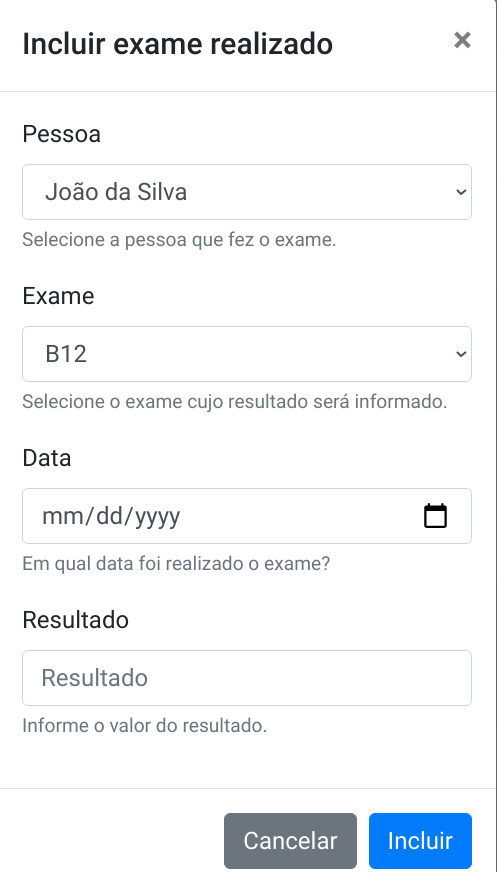
O formulário pode se originar de uma cópia do formulário de inclusão de pessoa, com as devidas modificações. Na primeira parte do formulário (Código 8.27), as principais modificações se referem a identificar corretamente o formulário, no campo ID (linha 161), e uma alteração no título do formulário (linha 166),
No corpo do formulário (Código 8.28), os dois primeiros campos consistem em listas suspensas (TEAM, 2020b). Para o caso da lista de pessoas, além da alteração do identificador do ID do label (linha 174), a pessoa que realizou o exame será escolhida por meio de uma lista suspensa (linhas 175 e 176). As opções da lista suspensa serão preenchidas via código javascript, a ser executado quando o formulário for aberto. Uma imagem de carregamento da lista (linha 179) é exibida enquanto os dados estiverem sendo carregados. A seleção do exame que foi realizado também é feita por meio de uma lista suspensa, e possui as mesmas características da lista suspensa de pessoas.
Os outros dois campos (data e resultado) são campos simples, sendo que a data foi definida como um campo do tipo date (Código 8.29, linha 193).
Por fim, os botões de ação se encontram ao final da página, sendo que o botão de inclusão do exame realizado deve ter o seu ID ajustado (Código 8.30, linha 208).
A abertura do formulário de inclusão de exame realizado já é tratada pelo javascript contido no framework bootstrap. Porém, ao carregar o formulário, é preciso preencher as listas suspensas com as devidas informações (pessoas e exames). Portanto, a primeira ação é elaborar uma função que possa preencher uma lista suspensa (Código 8.31). Essa função (linha 186) receberá como parâmetros qual é a lista a ser preenchida (combo_id) e qual é o nome da classe que fornecerá as informações (nome_classe). A função inicia chamando o back-end para obter a lista de informações da classe informada (linhas 187 a 195). A ação listar do back-end é acionada para esse fim (linha 188).
Considerando o caso de sucesso do fornecimento de dados pelo back-end, outra função é definida para realizar o preenchimento da lista suspensa (Código 8.32). A função inicia esvaziando a lista suspensa (linha 198) e tornando visível o ícone de carregamento (linha 200). Os dados são então percorridos (linha 202), de modo que para cada objeto é inserido uma opção (option) na lista suspensa (linhas 203 a 205). O jQuery pode ser utilizado para criar elementos (linha 204), utilizando-se o método attr para especificar o valor de um elemento e o método text (linha 205) para especificar o texto que deve aparecer no interior da tag (W3SCHOOLS, 2020b). A função considera que as classes possuem um atributo chamado id e um atributo chamado nome, que serão usado para compor cada opção da lista. Por fim, o ícone de carregamento é ocultado (linha 209), mas um tempo de espera de um segundo é inserido (linhas 208 e 210), para que se possa visualizar o ícone de carregamento. Esse tempo é dispensável para fins práticos, e existe apenas para demonstrar o ícone durante a programação do sistema.
A próxima ação consiste em acionar o carregamento das listas suspensar assim que o formulário de cadastro é aberto (Código 8.33). Quando ocorre a abertura do formulário identificado como modalIncluirExameRealizado (linha 214), a função de carregamento de lista é acionada duas vezes, para preencher as listas de pessoas e de exames (linhas 216 e 217, respectivamente).
Por fim, existe o código que efetivamente inclui o exame realizado (Código 8.35). A primeira ação consiste em capturar os valores dos campos informados no formulário (linhas 223 a 226). Note que para cada lista suspensa (linhas 225 e 226) será obtido o valor da opção selecionada (o ID). Os dados são, então, reunidos em um texto no formato json (linha 228) e enviados ao back-end por meio do comando ajax (linhas 230 a 238).
Quando a requisição é realizada, a função de manipulação da resposta do back-end é acionada (Código 8.35). Se o resultado da requisição for correto (linha 240), uma mensagem de sucesso é exibida (linha 242) e os campos são reiniciados (linhas 244 a 247). Em caso de erro informado pelo back-end, uma mensagem de erro é exibida (linha 250).
Nesta seção encontram-se detalhamentos sobre aspectos fundamentais de assuntos abordados neste material.
Dicionário é uma estrutura de dados que organiza informações no formato chave e valor. Utiliza-se dicionário para agregar informações diferentes mas relacionadas. Por exemplo, para armazenar o nome, o email e o telefone de uma pessoa poderiam ser utilizadas três variáveis (Código 9.1, linhas 4 a 6). Porém, pode-se criar apenas uma variável do tipo dicionário e armazenar essas três informações na única variável, com as devidas diferenciações (linhas 9 a 13). O fato de agregar informações em uma única estrutura é uma vantagem, pois ao manipular-se a estrutura agregada, todas as informações relacionadas permanecem juntas. Por exemplo, ao se copiar a estrutura para um local, todas as informações são enviadas, não necessitando realizar o envio individual de cada informação.
Fonte: https://github.com/hvescovi/programar2020/blob/master/99-fundamentos/python/dicionarios.py#L1
A exibição de dados do dicionário pode ocorrer de diversas formas (Código 9.2). A exibição direta do dicionário via comando print resulta na apresentação de dados em formato chave e valor, separado por vírgulas, com aspas simples em informações textuais (Listagem 9.3, linha 2). Pode-se também acessar cada informação do dicionário percorrendo-o com um laço de repetição (linhas 19 e 20). Cada informação do dicionário (nome, email e telefone) será acessada e pode ser então impressa (linhas 4 a 6 da listagem). É possível ainda acessar cada campo do dicionário separadamente, com uso de colchetes para especificar qual é o campo desejado (linha 23). Com o objetivo de adequar o conteúdo de um dicionário ao format json, pode-se fazer uso da biblioteca json (linha 26). Dentre os comandos disponíveis, existe o json.dumps, que ao receber um dicionário vai convertê-lo para um texto no formato json (linha 12 da listagem). Note as aspas duplas exibidas após o uso desse comando.
Fonte: https://github.com/hvescovi/programar2020/blob/master/
99-fundamentos/python/dicionarios.py#L15
Há um recurso de passagem de parâmetros em funções que permite expressar o conjunto chave = valor quantas vezes forem necessárias. Tal recurso é aplicado com uso de um duplo asterisco antes do nome do parâmetro, na declaração da função (Código 9.4, linha 31, comentado como CASO 1). Os parâmetros podem ser percorridos para o uso de seus valores (linhas 34 a 36). Por exemplo, uma função pode receber os dados de nome da pessoa e a cor da escova de dentes que essa pessoa utiliza (linha 39). Esses parâmetros serão percorridos e exibidos conforme informados (Listagem 9.5, linhas 14 a 16). Outra possibilidade de uso do dicionário é informar para a função um dicionário que contenha os parâmetros, em vez de informar diversos elementos no formato chave = valor (linha 42 do código, comentado como CASO 2). Para isso, é preciso usar novamente os dois asteriscos ao passar o dicionário para a função. Neste caso, esses dois asteriscos tem o propósito de “desempacotar” o dicionário e fazer com que ele possa ser recebido e utilizado pela função da mesma maneira que a função receberia as duplas chave=valor separadamente (como foi feito na linha 39). O resultado da execução da função que recebe o dicionário é a exibição de cada chave e valor informado (linhas 19 a 21 da listagem).
Fonte: https://github.com/hvescovi/programar2020/blob/master/
99-fundamentos/python/dicionarios.py#L31
O uso de dois asteriscos com dicionários é uma dúvida frequente, por ser um recurso muito versátil que simplifica o uso de parâmetros em quantidade variável. Veja uma explicação na íntegra sobre uma dúvida no significado do uso de dois asteriscos:
** operator will unpack the dict elements and thus **’type’:’Event’ would be treated as type=’Event’ (STACKOVERFLOW, 2020a).
O uso de dois asteriscos, portanto, é útil para poder utilizar dicionários como parâmetros em funções que aceitam receber um número variável de parâmetros (CASO 2). Por coincidência, os dois asteriscos também são utilizados na declaração da função para informar que a função pode receber um número variável de parâmetros, no formato chave = valor (CASO 1).
É possível também criar objetos passando os parâmetros (valores dos atributos) em um dicionário (Código 9.6). Considere a classe Pessoa, com os campos nome, email e telefone (linhas 44 a 50). Pode-se criar um objeto especificando os valores individualmente (linha 52) ou passando os valores em um dicionário (linha 54). Os resultados confirmam que os objetos foram criados com os dados corretos (Listagem 9.7, linhas 22 e 23).
Fonte: https://github.com/hvescovi/programar2020/blob/master/
99-fundamentos/python/dicionarios.py#L44
A implantação um sistema em python geralmente requer a instalação de pacotes que são utilizados pelos programas do sistema. Em python, uma maneira simples de instalar os pacotes é especificando-os em um arquivo à parte (por exemplo, requirements.txt). Esse arquivo vai conter os nomes dos pacotes, seguido pelas versões que devem ser utilizadas para que o sistema funcione conforme foi desenvolvido. Um sistema pode, por exemplo, exigir a instalação dos pacotes Flask e SQLAlchemy, em versões específicas (Código 9.8).
Para instalar os pacotes necessários, utiliza-se o comando: pip install -r requirements.txt. Em algumas distribuições linux, utiliza-se pip3 em vez de pip, para indicar o uso da versão 3 do python.
Para visualizar a versão do pacote que está sendo utilizada, pode-se utilizar o comando pip show nome_do_pacote. Por exemplo, para ver qual a versão do Flask que está sendo utilizada, usa-se o comando pip show flask.
É preciso incluir os arquivos do python no path do Windows, para que comandos do python no terminal (prompt de comando) possam ser executados. Para isso, deve-se ir ao item do menu Meu Computador, clicar com o botão direito e acessar as propriedades. A seguir, clicar no item Configurações avançadas do sistema, e depois clicar no botão Variáveis de ambiente. Localize a variável chamada Path, e edite-a. Deve-se inserir nessa variável a localização da pasta na qual se encontram os executáveis do python (python.exe) e os scripts de apoio (por exemplo, o programa pip.exe). Uma observação importante é que os caminhos (do python e dos scripts) devem ser separados por ponto-e-vírgula.
Veja um exemplo de configuração do valor da variável Path (no Windows, todas as linhas abaixo devem ser colocadas lado a lado; aqui estão separadas apenas para melhor visualização):
Em alguns computadores pode ocorrer que ao abrir o VSCode apareça uma tela preta apenas, em vez da tela normal do VSCode (STACKOVERFLOW, 2020b). Nesse caso, é preciso iniciar o VSCode com um parâmetro que desabilite o uso da GPU (placa de aceleração de vídeo). O atalho que abre o VSCode normalmente é similar a este:
Clique com o botão direito no atalho, acesse as propriedades dele, e altere esse comando para ficar desta maneira:
A identação automática de código pode ajudar a descobrir erros em páginas HTML. Para executar a identação, utilize a seguinte combinação de teclas:
BANDLER, R.; GRINDER, J. Sapos em Príncipes: programação neurolinguística. 12. ed. São Paulo, SP: Summus Editorial, 1982. ISBN 978-8532301451. Citado na página 17.
BELLEKENS, G. Postagem no Stackoverlow: UML - association or aggregation (simple code snippets). 2019. Acessado em 11/03/2019. Disponível em: https://stackoverflow.com/questions/28776779/uml-association-or-aggregation-simple-code-snippets. Citado na página 142.
BEZERRA, E. Princípios de Análise e Projeto de Sistemas com UML. 2. ed. Rio do Janeiro, RJ: Campus, 2006. ISBN 978-8535216967. Citado 4 vezes nas páginas 124, 142, 155 e 156.
BRUEGGE, B.; DUTOIT, A. Object-Oriented Software Engineering Using UML, Patterns, and Java. 3. ed. Upper Saddle River, NJ, USA: Pearson, 2010. Citado na página 142.
DEBONI, J. E. Z. Modelagem orientada a objetos com a UML. São Paulo, SP: Futura, 2003. Citado 2 vezes nas páginas 104 e 105.
FILHO, W. de P. P. Engenharia de software. Rio do Janeiro, RJ: LTC, 2003. v. 2. Citado 2 vezes nas páginas 132 e 135.
FOUNDATION, T. jQuery. jQuery.ajax(). 2020. Acessado em 09/06/2020. Disponível em: https://api.jquery.com/jquery.ajax/\#jQuery-ajax-settings. Citado na página 258.
GOMEZ, A. Postagem no Stackoverlow: How to invoke the super constructor? 2019. Acessado em 17/03/2019. Disponível em: https://stackoverflow.com/questions/2399307/how-to-invoke-the-super-constructor. Citado na página 171.
GUEDES, G. T. A. UML 2 - Uma Abordagem Prática. 3. ed. São Paulo, SP: Novatec, 2018. ISBN 978-85-7522-646-9. Citado na página 124.
JQUERY. .ready(). 2019. Acessado em 30/09/2019. Disponível em: https://api.jquery.com/ready/. Citado na página 87.
KEVIN. Postagem no Stackoverlow: Inheritance in Java - creating an object of the subclass invokes also the constructor of the superclass. Why exactly? 2019. Acessado em 17/03/2019. Disponível em: https://stackoverflow.com/questions/488727/inheritance-in-java-creating-an-object-of-the-subclass-invokes-also-the-constr. Citado na página 169.
LOGI. 3-Tier Architecture: A Complete Overview. 2021. Acessado em 23/02/2021. Disponível em: https://www.jinfonet.com/resources/bi-defined/3-tier-architecture-complete-overview/. Citado na página 27.
MEIER, J. et al. Web Application Architecture Guide - Application Architecture Pocket Guide Series. 1. ed. EUA: Microsoft, 2008. Citado na página 30.
ORACLE. Using the keyword super. 2019. Acessado em 25/03/2019. Disponível em: https://docs.oracle.com/javase/tutorial/java/IandI/super.html. Citado na página 169.
PILONE, D.; PITMAN, N. UML 2.0 in a Nutshell. 2. ed. Sebastopol, CA, USA: O’Reilly Media, 2009. ISBN 978-0596007959. Citado na página 165.
POPIFC. Procedimentos Operacionais Padrão de Limpeza, Desinfeção e Sanitização do ambiente escolar na volta às aulas em tempos da COVID-19. 2020. Acessado em 02/05/2021. Disponível em: https://informecoronavirus.ifc.edu.br/wp-content/uploads/sites/52/2020/08/POP-Limpeza.pdf. Citado na página 12.
SAUVE, J. P. Diagrama de Classes: um diagrama de três faces. 2020. Acessado em 21/02/2020. Disponível em: http://www.dsc.ufcg.edu.br/~jacques/cursos/map/html/uml/diagramas/classes/classes3.htm. Citado na página 124.
SQLALCHEMY, A. e contribuidores do. class sqlalchemy.types.String. 2020. Acessado em 07/04/2020. Disponível em: https://docs.sqlalchemy.org/en/13/core/type\_basics.html\#sqlalchemy.types.String. Citado na página 216.
SQLALCHEMY, A. e contribuidores do. Mapping Class Inheritance Hierarchies. 2020. Acessado em 13/11/2020. Disponível em: https://docs.sqlalchemy.org/en/13/orm/inheritance.html. Citado na página 187.
SQLALCHEMY, A. e contribuidores do. SQLAlchemy. 2020. Acessado em 09/04/2020. Disponível em: https://www.sqlalchemy.org/. Citado 2 vezes nas páginas 186 e 215.
STACKOVERFLOW. Converting Python dict to kwargs? 2020. Acessado em 15/04/2020. Disponível em: https://stackoverflow.com/questions/5710391/converting-python-dict-to-kwargs. Citado na página 343.
STACKOVERFLOW. VS Code main window is blank. 2020. Acessado em 04/02/2021. Disponível em: https://stackoverflow.com/questions/40323190/vs-code-main-window-is-blank. Citado na página 347.
STUNTZ, A. Ridiculously easy row and column layouts with Flexbox. 2018. Acessado em 04/03/2020. Disponível em: https://dev.to/drews256/ridiculously-easy-row-and-column-layouts-with-flexbox-1k01. Citado 2 vezes nas páginas 58 e 61.
TEAM, B. Bootstrap. 2020. Acessado em 11/03/2020. Disponível em: https://getbootstrap.com/. Citado na página 62.
TEAM, B. Bootstrap - Form Controls. 2020. Acessado em 18/11/2020. Disponível em: https://getbootstrap.com/docs/4.0/components/forms/\#form-controls. Citado na página 331.
TEAM, P. Flask quickstart: a minimal application. 2019. Acessado em 12/03/2019. Disponível em: http://flask.pocoo.org/docs/1.0/quickstart/. Citado 2 vezes nas páginas 215 e 217.
THOMAS, D. et al. Desenvolvimento Web ágil com Rails. 2. ed. Porto Alegre, RS: Bookman, 2008. ISBN 978-85-7780-264-7. Citado na página 173.
VENTURA, P. UML - Relacionamento entre classes- Agregação. 2020. Acessado em 21/02/2020. Disponível em: https://www.ateomomento.com.br/uml-classes-agregacao/. Citado na página 124.
VIANA. Procedimentos Operacionais Padronizados - Prefeitura de Viana. 2021. Acessado em 02/05/2021. Disponível em: http://www.viana.es.gov.br/site/download/1540395029640-pop.pdf. Citado na página 15.
W3SCHOOLS. HTML Introduction. 2020. Acessado em 01/03/2020. Disponível em: https://www.w3schools.com/html/html\_intro.asp. Citado na página 55.
W3SCHOOLS. jQuery - Add Elements. 2020. Acessado em 19/11/2020. Disponível em: https://www.w3schools.com/jquery/jquery\_dom\_add.asp. Citado na página 335.
WAZLAWICK, R. S. Object-oriented analysis and design for information systems: modeling with UML, OCL, and IFML. Rio de Janeiro, RJ: Elsevier, 2014. Citado 2 vezes nas páginas 130 e 141.
WEILKIENS, T. Systems engineering with SysML/UML: modeling, analysis, design. Burlington, MA, USA: Elsevier, 2006. Citado 4 vezes nas páginas 130, 136, 138 e 139.
WILSON, S. Simple Example Javascript Scripts. 2020. Acessado em 31/03/2020. Disponível em: http://userwww.sfsu.edu/infoarts/technical/howto/wilson.javascript.exampls.html. Citado na página 76.
erros mais comuns e difíceis
CTRL+F5, 188
depurar no modo depuração, 188
flask.py, 188
git, 17
adicionar arquivo alterado, 19
atualizar repositório local, 21
atualizar repositório remoto, 21
clonar repositório, 18
compartilhar repositório, 29
configurar repositório local, 20
confirmar alterações, 19
excluir arquivos ou pastas, 28
gravar usuário e senha, 29
merge, 24
renomear arquivos ou pastas, 28
jquery, 43
(document).ready, 45
ajax, 126
dataType, 170
append, 178
programação orientada a objetos, 52
agregação, 68, 151
anotação override, 88
classe abstrata, 78, 81
composição, 72, 151
construtor, 56
encapsulamento, 59
generalização (herança), 74
invocação de construtor (super), 85
teste da classe, 54
python
dicionário, 119, 182
Flask, 107, 110
jsonify, 116, 120, 122
render_template, 116, 120, 122
método __str__, 158
pip, 187
requests, 120, 122
SQLAlchemy, 108
relacionamento N x N, 157
windows
Path, 187